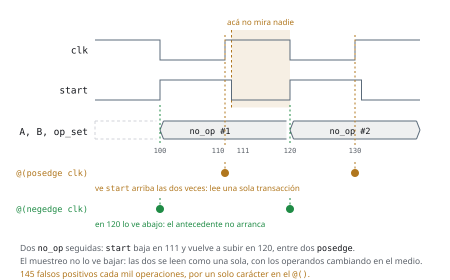

Día 7La otra mitad, y el cierre
Las mismas slides del deck, con las notas del instructor adentro del texto y el código completo. Si estás haciendo el curso solo, empezá por acá y tené el deck al lado para los repasos.
Ayer quedó…
Dónde dejamos el testbench
- El testbench quedó reutilizable para un agent: agents con
is_active, el análisis en elenv, y el estímulo afuera del árbol, en sequences. La última pieza —coordinar dos— es hoy a la mañana - Ninguna línea del test nombra un componente de adentro del
env: la última se fue con eldefault_sequenceporuvm_config_db - Y falta la otra mitad del plan de verificación: las filas que ningún scoreboard puede cerrar, porque no son sobre el resultado sino sobre el protocolo
La recap del día 7 hace de bisagra, y conviene decir las dos cosas que la componen: hoy a la mañana se cierra UVM —la sequence virtual es la última pieza, y con eso el testbench del curso está entero— y a la tarde se abre lo que UVM no resuelve, que es la otra mitad del plan. El tercer bullet es el arco que se plantó el día 1 con el plan de verificación y se dejó abierto a propósito: el scoreboard chequea qué, la assertion chequea cómo. Hoy se cierra.
Agenda
Día 7 · ≈ 5 h 15 · unidad 8 · la otra mitad
- Calentamiento: cinco semillas y un merge, con
make regresion - Sequences virtuales: la última pieza del testbench reutilizable
- Assertions (SVA)
- El capstone: un testbench de APB, desde cero
- De la VTALU a un bus real
- La caja de herramientas de debug · Las 21 trampas mudas
- Glosario, referencias y cierre
- Autoevaluación: quince cosas que a esta altura tendrías que poder hacer
- El lunes: qué hacer con esto cuando se apaga la pantalla
Y después, el día 8: opcional, y para el que ya entregó el capstone
Al final del día podés:
- Escribir una property que vea una violación de protocolo, y decir por qué
--assertno es opcional - Coordinar dos interfaces desde una sola sequence virtual
- Entregar un testbench entero para un DUT que no viste antes
La mañana tiene tres piezas y el orden importa: el calentamiento de semillas son
diez minutos sin SystemVerilog y engancha con el make regresion que el capstone
va a pedir; las sequences virtuales cierran UVM; y SVA abre la otra mitad del
plan. La tarde es el capstone.
El tercer objetivo es el que vale el curso, y es honesto ponerlo como objetivo
del día aunque la entrega sea después: en formato empresa el capstone se entrega
al día siguiente, y en un cuatrimestre va al período de exámenes. Lo que se hace
hoy a la tarde es arrancarlo con el instructor al lado, que es cuando más rinde.
Ejercicio · Día 7 · 1 de 2
La misma sequence, otra semilla
cd code/ejercicios/d7-semillas && bash run.sh
- El único ejercicio del curso sin SystemVerilog: lo que se escribe es la regresión, seis líneas de shell
- Correr el mismo test con las semillas 1 a 5 y mergear las cinco coberturas
con
verilator_coverage --write - Se corrige comprobando que el merge cubre más que la mejor de las cinco sola
Es la última fila de la tabla de coverage closure, hecha, y es el
calentamiento del día 7: diez minutos, cero SystemVerilog, y deja instalado el
make regresion que el capstone de esta tarde va a pedir. Cierra además el arco
que abrió el día 5 con el caso dirigido: uno llena el bin que el random no
alcanza, el otro acumula lo que el random sí alcanza, y no se reemplazan entre
sí.
El detalle que hay que subrayar es por qué el test manda 25 operaciones y no
mil: con mil esto no funciona. Está medido y está en la slide "otra semilla, y
de nuevo" — u2/convencional y u7/sequences dan 66 de 76 con cualquier semilla, y el merge
también. Con 25 el estímulo todavía no saturó y ahí sí cada semilla cubre un
pedazo distinto: 41 a 47 bins cada una, 62 las cinco mergeadas.
La regla que se llevan, en una línea: otra semilla acumula mientras el
estímulo no saturó, y reproduce un fallo intermitente. No llena un bin que el
estímulo no puede alcanzar.
Y el comando del merge conviene nombrarlo por lo que es en la industria:
verilator_coverage --write es acá lo que el merge de ucdb es en Questa. Una
regresión de verdad son cien semillas de noche y un solo número a la mañana.
Sequences virtuales
El problema: dos interfaces y un solo start()
- Una sequence virtual es una sequence que no manda items propios: sólo arranca otras sequences, sobre varios sequencers
- Aparece cuando el DUT tiene más de una interfaz —un bus de configuración y un stream de datos, por ejemplo— y el test necesita coordinarlas: configurá primero, después mandá tráfico
- Se le llama "virtual" porque no está atada a un tipo de item ni a un sequencer
- El
u7/agentsya nos dejó el escenario armado: dos VTALU. Ahí el segundo agent era pasivo; con los dos activos hay dos sequencers, y algo que coordinar full_sequenceya es media sequence virtual: no manda items propios, sólo arranca otras. Lo único que le falta es el segundo sequencer
Primera hora del día 7, y es a propósito. Es la última pieza del testbench
reutilizable, y llega el día del capstone porque es el día en que el alumno mira
un DUT nuevo y decide qué estructura le corresponde. El capstone tiene dos
esclavos APB, cada uno con su interface —uno lo maneja el testbench, el otro un
módulo— y esa es la forma de los agents: uno activo y uno pasivo, un solo
sequencer, y ninguna sequence virtual. Esta hora es la que le da al alumno el
criterio para decidirlo en vez de adivinarlo, y la que le deja escrita la
respuesta para el día en que el segundo esclavo también sea suyo.
Conviene arrancar por el problema y no por la sintaxis, porque la sintaxis es
media pantalla: lo difícil de entender es por qué hace falta una clase nueva
cuando full_sequence ya compone sequences.
La respuesta es la del último bullet, y es geométrica: una sequence normal
conoce un sequencer, el que le pasó start(). Todo lo que quiera hablarle a
dos interfaces necesita dos handles, y esos handles tienen que venir de algún
lado.
El ejemplo corre y está en code/u7/sequences/virtual/: es el testbench de esta
sección con dos líneas cambiadas en el env, y todo lo demás por
referencia. Vale decirlo antes de mostrar el código, porque es la mitad del
argumento: una sequence virtual no cambia la estructura del testbench.
Sequences virtuales
El virtual sequencer: handles, no items
code/u7/sequences/virtual/tb_classes/virtual_sequencer.svh · #the-handlesclass virtual_sequencer extends uvm_sequencer;
`uvm_component_utils(virtual_sequencer)
sequencer clase_sequencer_h;
sequencer modulo_sequencer_h;
function new(string name, uvm_component parent);
super.new(name, parent);
endfunction : new
endclass : virtual_sequencerel archivo entero, 20 líneas
// The virtual sequencer: it has no queue, it arbitrates no items, it talks to no
// driver. It is a component that exists for two things:
//
// 1. to hold the HANDLES to the real sequencers, somewhere the sequence can
// reach without looking up by string;
// 2. to be a uvm_component, that is, to live in the tree and have a name.
//
// That is why it extends uvm_sequencer WITHOUT parameters: the default item is
// uvm_sequence_item, and none is ever sent.
class virtual_sequencer extends uvm_sequencer;
`uvm_component_utils(virtual_sequencer)
sequencer clase_sequencer_h;
sequencer modulo_sequencer_h;
function new(string name, uvm_component parent);
super.new(name, parent);
endfunction : new
endclass : virtual_sequencercode/u7/sequences/virtual/tb_classes/env.svh · #wiring-the-sequencers // The handles are passed HERE and not looked up by string: in connect_phase
// both agents already exist, and if somebody renames a component this does
// not compile instead of returning null at simulation time.
virtual_sequencer_h.clase_sequencer_h = clase_agent_h.sequencer_h;
virtual_sequencer_h.modulo_sequencer_h = modulo_agent_h.sequencer_h;el archivo entero, 65 líneas
// The env of the Sequences section with TWO changes, and no more:
//
// 1. the second agent is UVM_ACTIVE instead of UVM_PASSIVE;
// 2. there is a virtual_sequencer, and connect_phase hands it the handles of
// the two real sequencers.
//
// The rest --agents, scoreboards, coverage, the config_db scope-- is
// identical. That is the point: a virtual sequence does not change the structure
// of the testbench, it only adds who coordinates it.
class env extends uvm_env;
`uvm_component_utils(env);
vtalu_agent clase_agent_h, modulo_agent_h;
vtalu_agent_config clase_cfg_h, modulo_cfg_h;
scoreboard clase_scoreboard_h, modulo_scoreboard_h;
coverage clase_coverage_h, modulo_coverage_h;
virtual_sequencer virtual_sequencer_h;
function new(string name, uvm_component parent);
super.new(name, parent);
endfunction : new
function void build_phase(uvm_phase phase);
env_config env_config_h;
if (!uvm_config_db#(env_config)::get(this, "", "config", env_config_h))
`uvm_fatal("ENV", "Failed to get env config")
// Both active: each with its own sequencer and driver.
clase_cfg_h = new(.bfm(env_config_h.clase_bfm), .is_active(UVM_ACTIVE));
modulo_cfg_h = new(.bfm(env_config_h.modulo_bfm), .is_active(UVM_ACTIVE));
uvm_config_db#(vtalu_agent_config)::set(this, "clase_agent_h*", "config", clase_cfg_h);
uvm_config_db#(vtalu_agent_config)::set(this, "modulo_agent_h*", "config", modulo_cfg_h);
clase_agent_h = vtalu_agent::type_id::create("clase_agent_h", this);
modulo_agent_h = vtalu_agent::type_id::create("modulo_agent_h", this);
virtual_sequencer_h = virtual_sequencer::type_id::create("virtual_sequencer_h", this);
clase_scoreboard_h = scoreboard::type_id::create("clase_scoreboard_h", this);
modulo_scoreboard_h = scoreboard::type_id::create("modulo_scoreboard_h", this);
clase_coverage_h = coverage::type_id::create("clase_coverage_h", this);
modulo_coverage_h = coverage::type_id::create("modulo_coverage_h", this);
endfunction : build_phase
function void connect_phase(uvm_phase phase);
// The handles are passed HERE and not looked up by string: in connect_phase
// both agents already exist, and if somebody renames a component this does
// not compile instead of returning null at simulation time.
virtual_sequencer_h.clase_sequencer_h = clase_agent_h.sequencer_h;
virtual_sequencer_h.modulo_sequencer_h = modulo_agent_h.sequencer_h;
clase_agent_h.command_ap.connect(clase_scoreboard_h.cmd_f.analysis_export);
clase_agent_h.command_ap.connect(clase_coverage_h.analysis_export);
clase_agent_h.result_ap.connect(clase_scoreboard_h.analysis_export);
modulo_agent_h.command_ap.connect(modulo_scoreboard_h.cmd_f.analysis_export);
modulo_agent_h.command_ap.connect(modulo_coverage_h.analysis_export);
modulo_agent_h.result_ap.connect(modulo_scoreboard_h.analysis_export);
endfunction : connect_phase
endclass : env- No tiene cola, no arbitra, no habla con ningún driver. Es un
uvm_componentque existe para tener los handles y para vivir en el árbol con un nombre - Extiende
uvm_sequencersin parametrizar: el item por defecto esuvm_sequence_itemy nunca se manda ninguno - Los handles se asignan en el
connect_phase, donde los agents ya existen
La pregunta que aparece sola: ¿y por qué un componente, si es sólo dos punteros?
Por dos motivos. Uno, para que la sequence lo alcance con p_sequencer en vez
de buscar por string. Dos, porque tiene que estar en el árbol para que el test
pueda arrancarle una sequence encima: seq.start(env_h.virtual_sequencer_h).
El libro resuelve los handles con uvm_top.find("*.env_h.sequencer_h"). Sigue
funcionando —uvm_top está por compatibilidad, la forma actual es
uvm_root::get()— pero buscar componentes por string es frágil: el día que
alguien renombra el env_h, el find() devuelve null y el fatal aparece
lejos del cambio. Asignarlos en el connect_phase no compila si el nombre
cambió, que es exactamente lo que uno quiere.
Sequences virtuales
La sequence virtual: p_sequencer y dos ramas
code/u7/sequences/virtual/tb_classes/coordinada_sequence.svh · #p-sequencer// `uvm_declare_p_sequencer declares `p_sequencer` with the type above and casts
// it on its own inside m_set_p_sequencer. Without it, get_sequencer() returns a
// uvm_sequencer_base and every use would need a cast by hand.
class coordinada_sequence extends uvm_sequence;
`uvm_object_utils(coordinada_sequence)
`uvm_declare_p_sequencer(virtual_sequencer)el archivo entero, 76 líneas
// THE virtual sequence.
//
// Two things set it apart from every sequence in the Sequences section:
//
// 1. It has NO items of its own. It extends uvm_sequence without parameters
// and never calls start_item(): all it does is start OTHER sequences.
// Hence "virtual" -- it is tied to no item type and no sequencer.
// 2. It runs on more than one sequencer, and that is where the one thing no
// single sequence can do comes from: coordinating two interfaces.
// `uvm_declare_p_sequencer declares `p_sequencer` with the type above and casts
// it on its own inside m_set_p_sequencer. Without it, get_sequencer() returns a
// uvm_sequencer_base and every use would need a cast by hand.
class coordinada_sequence extends uvm_sequence;
`uvm_object_utils(coordinada_sequence)
`uvm_declare_p_sequencer(virtual_sequencer)
int unsigned count = 1000;
function new(string name = "coordinada_sequence");
super.new(name);
endfunction : new
task body();
reset_sequence reset_a, reset_b;
maxmult_sequence maxmult;
random_sequence random_b;
un_op_sequence primera, segunda;
reset_a = reset_sequence::type_id::create("reset_a");
reset_b = reset_sequence::type_id::create("reset_b");
maxmult = maxmult_sequence::type_id::create("maxmult");
random_b = random_sequence::type_id::create("random_b");
primera = un_op_sequence::type_id::create("primera");
segunda = un_op_sequence::type_id::create("segunda");
random_b.count = count;
// --- 1. Both ALUs get reset at the same time -----------------------------
// fork/join over TWO sequencers. Each branch blocks on its own driver, and
// the join waits for both: that cannot be written inside a normal
// sequence, which only knows the sequencer that started it.
fork
reset_a.start(p_sequencer.clase_sequencer_h);
reset_b.start(p_sequencer.modulo_sequencer_h);
join
// --- 2. Parallel traffic, different on each interface -------------------
// A does the directed overflow case while B sends at random.
fork
maxmult.start(p_sequencer.clase_sequencer_h);
random_b.start(p_sequencer.modulo_sequencer_h);
join
// --- 3. What no single sequence can do ----------------------------------
// The result of VTALU A is the operand of B. It is a dependency BETWEEN
// interfaces: the second one cannot even start being built until the
// first one answered.
primera.A = 8'h0F;
primera.B = 8'h07;
primera.op = mul_op;
primera.start(p_sequencer.clase_sequencer_h);
`uvm_info("COORDINADA", $sformatf(
"A returned %0d: it goes as an operand into B", primera.result), UVM_LOW)
segunda.A = primera.result[7:0];
segunda.B = 8'h01;
segunda.op = add_op;
segunda.start(p_sequencer.modulo_sequencer_h);
`uvm_info("COORDINADA", $sformatf(
"B returned %0d", segunda.result), UVM_LOW)
endtask : body
endclass : coordinada_sequencecode/u7/sequences/virtual/tb_classes/coordinada_sequence.svh · #the-fork // --- 1. Both ALUs get reset at the same time -----------------------------
// fork/join over TWO sequencers. Each branch blocks on its own driver, and
// the join waits for both: that cannot be written inside a normal
// sequence, which only knows the sequencer that started it.
fork
reset_a.start(p_sequencer.clase_sequencer_h);
reset_b.start(p_sequencer.modulo_sequencer_h);
join
// --- 2. Parallel traffic, different on each interface -------------------
// A does the directed overflow case while B sends at random.
fork
maxmult.start(p_sequencer.clase_sequencer_h);
random_b.start(p_sequencer.modulo_sequencer_h);
joinel archivo entero, 76 líneas
// THE virtual sequence.
//
// Two things set it apart from every sequence in the Sequences section:
//
// 1. It has NO items of its own. It extends uvm_sequence without parameters
// and never calls start_item(): all it does is start OTHER sequences.
// Hence "virtual" -- it is tied to no item type and no sequencer.
// 2. It runs on more than one sequencer, and that is where the one thing no
// single sequence can do comes from: coordinating two interfaces.
// `uvm_declare_p_sequencer declares `p_sequencer` with the type above and casts
// it on its own inside m_set_p_sequencer. Without it, get_sequencer() returns a
// uvm_sequencer_base and every use would need a cast by hand.
class coordinada_sequence extends uvm_sequence;
`uvm_object_utils(coordinada_sequence)
`uvm_declare_p_sequencer(virtual_sequencer)
int unsigned count = 1000;
function new(string name = "coordinada_sequence");
super.new(name);
endfunction : new
task body();
reset_sequence reset_a, reset_b;
maxmult_sequence maxmult;
random_sequence random_b;
un_op_sequence primera, segunda;
reset_a = reset_sequence::type_id::create("reset_a");
reset_b = reset_sequence::type_id::create("reset_b");
maxmult = maxmult_sequence::type_id::create("maxmult");
random_b = random_sequence::type_id::create("random_b");
primera = un_op_sequence::type_id::create("primera");
segunda = un_op_sequence::type_id::create("segunda");
random_b.count = count;
// --- 1. Both ALUs get reset at the same time -----------------------------
// fork/join over TWO sequencers. Each branch blocks on its own driver, and
// the join waits for both: that cannot be written inside a normal
// sequence, which only knows the sequencer that started it.
fork
reset_a.start(p_sequencer.clase_sequencer_h);
reset_b.start(p_sequencer.modulo_sequencer_h);
join
// --- 2. Parallel traffic, different on each interface -------------------
// A does the directed overflow case while B sends at random.
fork
maxmult.start(p_sequencer.clase_sequencer_h);
random_b.start(p_sequencer.modulo_sequencer_h);
join
// --- 3. What no single sequence can do ----------------------------------
// The result of VTALU A is the operand of B. It is a dependency BETWEEN
// interfaces: the second one cannot even start being built until the
// first one answered.
primera.A = 8'h0F;
primera.B = 8'h07;
primera.op = mul_op;
primera.start(p_sequencer.clase_sequencer_h);
`uvm_info("COORDINADA", $sformatf(
"A returned %0d: it goes as an operand into B", primera.result), UVM_LOW)
segunda.A = primera.result[7:0];
segunda.B = 8'h01;
segunda.op = add_op;
segunda.start(p_sequencer.modulo_sequencer_h);
`uvm_info("COORDINADA", $sformatf(
"B returned %0d", segunda.result), UVM_LOW)
endtask : body
endclass : coordinada_sequence`uvm_declare_p_sequencerdeclarap_sequencer**con el tipo del sequencer virtual** y lo castea solo. Sin él,get_sequencer()devuelve unuvm_sequencer_basey hay que castear a mano en cada uso- El
fork/joines sobre dos sequencers: cada rama bloquea en su driver y eljoinespera a las dos - Eso no se puede escribir adentro de una sequence normal, que conoce un solo sequencer
El uvm_declare_p_sequencer es azúcar, y conviene decirlo: lo único que hace es
declarar la variable y redefinir m_set_p_sequencer() con el $cast. Si el
sequencer sobre el que se arranca no es de ese tipo, el fatal salta ahí y no
veinte líneas después.
El detalle que se pasa por alto: las dos ramas del fork arrancan sequences
distintas sobre sequencers distintos. Si fueran dos sequences sobre el
mismo sequencer, competirían por la arbitración y los items saldrían
intercalados — que es un escenario legítimo, pero es otro.
Y una advertencia de campo: una sequence virtual con un solo sequencer es una
sequence normal con más ceremonia. La clase se justifica cuando hay dos.
Sequences virtuales
Lo que ninguna sequence sola puede
code/u7/sequences/virtual/tb_classes/coordinada_sequence.svh · #the-ordered-pair // --- 3. What no single sequence can do ----------------------------------
// The result of VTALU A is the operand of B. It is a dependency BETWEEN
// interfaces: the second one cannot even start being built until the
// first one answered.
primera.A = 8'h0F;
primera.B = 8'h07;
primera.op = mul_op;
primera.start(p_sequencer.clase_sequencer_h);
`uvm_info("COORDINADA", $sformatf(
"A returned %0d: it goes as an operand into B", primera.result), UVM_LOW)
segunda.A = primera.result[7:0];
segunda.B = 8'h01;
segunda.op = add_op;
segunda.start(p_sequencer.modulo_sequencer_h);el archivo entero, 76 líneas
// THE virtual sequence.
//
// Two things set it apart from every sequence in the Sequences section:
//
// 1. It has NO items of its own. It extends uvm_sequence without parameters
// and never calls start_item(): all it does is start OTHER sequences.
// Hence "virtual" -- it is tied to no item type and no sequencer.
// 2. It runs on more than one sequencer, and that is where the one thing no
// single sequence can do comes from: coordinating two interfaces.
// `uvm_declare_p_sequencer declares `p_sequencer` with the type above and casts
// it on its own inside m_set_p_sequencer. Without it, get_sequencer() returns a
// uvm_sequencer_base and every use would need a cast by hand.
class coordinada_sequence extends uvm_sequence;
`uvm_object_utils(coordinada_sequence)
`uvm_declare_p_sequencer(virtual_sequencer)
int unsigned count = 1000;
function new(string name = "coordinada_sequence");
super.new(name);
endfunction : new
task body();
reset_sequence reset_a, reset_b;
maxmult_sequence maxmult;
random_sequence random_b;
un_op_sequence primera, segunda;
reset_a = reset_sequence::type_id::create("reset_a");
reset_b = reset_sequence::type_id::create("reset_b");
maxmult = maxmult_sequence::type_id::create("maxmult");
random_b = random_sequence::type_id::create("random_b");
primera = un_op_sequence::type_id::create("primera");
segunda = un_op_sequence::type_id::create("segunda");
random_b.count = count;
// --- 1. Both ALUs get reset at the same time -----------------------------
// fork/join over TWO sequencers. Each branch blocks on its own driver, and
// the join waits for both: that cannot be written inside a normal
// sequence, which only knows the sequencer that started it.
fork
reset_a.start(p_sequencer.clase_sequencer_h);
reset_b.start(p_sequencer.modulo_sequencer_h);
join
// --- 2. Parallel traffic, different on each interface -------------------
// A does the directed overflow case while B sends at random.
fork
maxmult.start(p_sequencer.clase_sequencer_h);
random_b.start(p_sequencer.modulo_sequencer_h);
join
// --- 3. What no single sequence can do ----------------------------------
// The result of VTALU A is the operand of B. It is a dependency BETWEEN
// interfaces: the second one cannot even start being built until the
// first one answered.
primera.A = 8'h0F;
primera.B = 8'h07;
primera.op = mul_op;
primera.start(p_sequencer.clase_sequencer_h);
`uvm_info("COORDINADA", $sformatf(
"A returned %0d: it goes as an operand into B", primera.result), UVM_LOW)
segunda.A = primera.result[7:0];
segunda.B = 8'h01;
segunda.op = add_op;
segunda.start(p_sequencer.modulo_sequencer_h);
`uvm_info("COORDINADA", $sformatf(
"B returned %0d", segunda.result), UVM_LOW)
endtask : body
endclass : coordinada_sequence- El resultado de la VTALU A entra como operando de la B: una dependencia entre interfaces, y en serie. La segunda no puede ni armarse hasta que la primera contestó
- El
resultvuelve adentro del item, que es el camino de vuelta de esta unidad 0F × 07 = 105, y la B contesta106. Corre:code/u7/sequences/virtual/run.sh
Ésta es la slide que justifica la clase. Los dos fork de la slide anterior se
podrían imitar con dos tests corriendo en paralelo; esto no, porque hay un dato
que cruza de una interfaz a la otra en el medio del escenario.
Es exactamente la forma que tiene el caso real que el apéndice del bus promete:
configurar por APB, leer el estado, y recién entonces mandar tráfico por AXI con
lo que la configuración devolvió. Cambia el protocolo, no la estructura.
Y el criterio para la tarde: en el capstone el segundo esclavo lo maneja un
módulo, así que hay un sequencer y esto no hace falta. La sequence virtual
entra el día que las dos interfaces son del testbench y una depende de la otra —
y entonces se escribe igual que acá.
Y el cierre honesto: el ejemplo corre sobre dos VTALU porque es el DUT que
tenemos. Con dos interfaces distintas —dos transactions, dos drivers— la
sequence virtual se escribe igual: los handles serían de dos tipos de
sequencer, y nada más.
Sequences virtuales
¿Y si la rama B tiene que esperar a la A?
// uvm_event: un aviso, de uno a muchos. Sale del pool global, nadie lo construye
uvm_event listo = uvm_event_pool::get_global("dut_configurado");
listo.trigger(); // la rama que configuró avisa
listo.wait_trigger(); // la que espera bloquea acá
listo.wait_ptrigger(); // igual, pero si ya pasó, sigue de largo
// uvm_barrier: un punto de encuentro entre N ramas
uvm_barrier arranque = uvm_barrier_pool::get_global("arranque");
arranque.set_threshold(2);
arranque.wait_for(); // ninguna de las dos pasa hasta que llegaron las dos
- El
joinsincroniza al final. Cuando la rama B tiene que esperar a la A en el medio, hace falta un objeto de sincronización uvm_eventes de uno a muchos: uno avisa, los que esperan siguen. Ytrigger(data)puede llevar unuvm_objectadjuntouvm_barrieres simétrico: nadie pasa hasta que llegaron todos. Es el "arranquen juntos" de dos agents que tienen que empezar en el mismo ciclo- Un
bitcompartido conwait(flag)no alcanza: pierde el pulso si el que espera llegó tarde, y no lleva dato
Ésta es la pregunta que aparece sola apenas se dibuja el fork de la slide
anterior, y conviene contestarla ahí mismo: "¿y si la rama B no puede arrancar
hasta que la A configuró el DUT?".
La distinción que hay que dejar clara es uno a muchos contra simétrico. El
uvm_event tiene un lado que avisa y otro que espera, y los papeles no se
cambian: sirve para "el reset terminó", "el DUT quedó configurado", "llegó la
interrupción". El uvm_barrier no tiene lados: las N ramas ejecutan la misma
línea y ninguna pasa hasta que están todas. Sirve para "arranquen juntas" y para
"esperen todas a que termine la fase de configuración".
El wait_ptrigger() merece su propio segundo, porque es la carrera clásica: si
la rama A dispara antes de que la B llegue al wait_trigger(), la B espera para
siempre. La p es de persistent: pregunta si el evento ya pasó alguna vez.
La regla práctica: si no podés garantizar el orden, wait_ptrigger().
Y por qué no un bit compartido, que es lo primero que se intenta: un bit no
guarda historia, no lleva dato adjunto, y no se puede resetear entre fases sin
que alguien se coma un pulso. Los dos objetos de UVM existen precisamente porque
esa versión casera falla una vez de cada cien corridas.
El modo de falla propio: un barrier con el threshold mal puesto no da error —
cuelga. El síntoma es un test que termina por +UVM_TIMEOUT sin un solo
UVM_ERROR, y +UVM_OBJECTION_TRACE muestra la objection arriba y nadie
avanzando.
Assertions (SVA)
El agujero que dejó el scoreboard
- El scoreboard de este curso chequea el resultado:
A op Bcontra lo que devolvió el DUT. Mil operaciones, mil comparaciones, cero errores - Nadie chequea el protocolo. Un DUT que devuelve bien el
resultpero bajadoneun ciclo antes, o lo levanta conno_op, pasa todos los tests del curso - La regla del protocolo está escrita en tres lugares: en prosa en la spec, adentro del BFM, y en la cabeza del que lo escribió. En ninguno de los tres se chequea
- Una assertion es esa misma frase, en forma ejecutable, corriendo sola toda la simulación
Vale abrir la sección con la pregunta y dejarla flotando medio minuto: ¿qué
parte del testbench se daría cuenta si el DUT levantara done dos ciclos antes?
La respuesta honesta es ninguna, y sorprende, porque a esta altura el testbench
ya tiene scoreboard, cobertura, dos agents y sequences.
La razón es estructural, no un descuido: el scoreboard recibe transactions, que
es justamente lo que queda después de borrar el protocolo. El monitor lo
borra en los analysis ports y hace bien: eso es lo que hace que el scoreboard no sepa
que existe un clk. El precio es que la capa que ve los cables —la interface— es
la única que puede chequearlos, y hasta hoy sólo los movía.
Ésta es también la respuesta a "¿por qué SVA es la otra mitad de la
verificación?": no es otra técnica para hacer lo mismo, es la mitad que este
testbench no cubre.
Assertions (SVA)
Inmediatas y concurrentes: la que ya conocen y la nueva
// INMEDIATA: es una SENTENCIA. Corre cuando el hilo pasa por ahí,
// una vez, y nada más. La de las transactions es de esta familia.
assert (cmd.op inside {add_op, sub_op, and_op, xor_op, mul_op})
else `uvm_error("SEQ", "operacion invalida");
// CONCURRENTE — la novedad. Es una DECLARACION con reloj: se enchufa
// al arrancar la simulacion y se evalua en cada flanco, para siempre.
a_done : assert property (@(posedge clk) start |=> ##[0:4] done);
- La inmediata vive adentro de un
begin/end, es procedural, y sólo existe mientras el hilo está parado ahí - La concurrente no vive en ningún hilo: es una declaración, como un
always. Se escribe una vez y chequea cada flanco de la simulación entera - Por eso una concurrente puede describir algo que dura varios ciclos, y una inmediata no
La distinción cuesta al principio y conviene anclarla con la analogía del RTL:
una inmediata es a un if lo que una concurrente es a un always_ff. La
primera se ejecuta; la segunda se instancia.
La consecuencia práctica es la que importa: la inmediata sólo puede mirar el
presente —el valor de una variable en ese instante—, mientras que la concurrente
tiene un eje de tiempo propio y puede decir "si pasa esto, tres ciclos después
tiene que pasar aquello". Ninguna cantidad de if escribe esa frase sin
inventar máquinas de estado a mano.
Y el enganche con las transactions: assert(x.randomize()) es una inmediata, y ahí
está la trampa muda de aquella sección —assert es una directiva de simulación, y
con las asserts apagadas el argumento no se ejecuta. Acá se ve por qué: son la
misma palabra clave para dos cosas distintas.
Assertions (SVA)
Anatomía de una property
a_done_llega : // <- el label: NO es opcional
assert property (
@(posedge clk) // <- el reloj: cuando se muestrea
disable iff (!reset_n) // <- cuando NO chequear
start && (op_set != no_op) // <- el antecedente
|-> // <- la implicacion
##[1:5] done // <- el consecuente
) else `uvm_error("SVA", "..."); // <- que hacer si falla
- Se lee como una frase: "en cada flanco de
clk, mientras no haya reset, sistartestá arriba con una operación real, entoncesdonellega dentro de cinco ciclos" - El label sale en el mensaje de error y en el reporte de cobertura. Una property sin label es un error anónimo a las tres de la mañana
- Las siete partes son siempre las mismas. El resto de la sección es aprender qué se puede poner en cada una
Conviene escribir esta slide en el pizarrón como plantilla y volver a ella cada
vez que aparezca una property nueva: el alumno que se pierde en SVA casi siempre
se pierde porque no distingue el antecedente del consecuente.
El label merece un párrafo propio. Sin él, el simulador inventa uno
(__unnamed$$_0), y ese nombre es el que va a aparecer en el log de la regresión
nocturna y en el reporte de cobertura de assertions. Es exactamente el mismo
argumento del begin : nombre que el curso viene usando desde interfaces y BFM.
El disable iff se ve en detalle más adelante, pero vale adelantar por qué está
tan arriba en la plantilla: es la parte que más se olvida y la que más falsos
positivos genera.
Assertions (SVA)
|-> contra |=>, el error número uno
// |-> overlapping: el consecuente empieza en EL MISMO flanco
a : assert property (@(posedge clk) start |-> !done);
// |=> non-overlapping: el consecuente empieza en el flanco SIGUIENTE
b : assert property (@(posedge clk) start |=> !done);
a |=> bes exactamentea |-> ##1 b. No hay más misterio que ése- ¿Cuál va? Depende de si la respuesta es combinacional (el mismo flanco) o
registrada (el siguiente). En el VTALU,
donesale de unalways_ff: siempre es el siguiente - Equivocarse no da un síntoma solo:
start |-> donecondoneregistrado falla en cada transacción —ve eldoneviejo—, y una property cuyo antecedente nunca ocurre pasa en vacío. Por eso va siempre con sucover
Ésta es la primera pregunta de toda entrevista sobre SVA y conviene practicarla
con el DUT en la mano: done_1c <= start && (op != 3'b000) es un NBA, así que
lo que se escribe en el flanco n recién se lee en el n+1. Con |-> la
property compararía start contra el done viejo.
La regla operativa, que es más útil que la teoría: |=> es |-> ##1, así que
la pregunta no es cuál de los dos operadores va sino cuántos flancos después lo
promete la spec. Un assign contesta en el mismo flanco y un <= en el
siguiente, pero eso es el caso fácil: la property estrella de esta misma sección
—start && op_set != no_op |-> ##[1:5] done— usa |-> para un done que sale de
un always_ff, porque la spec promete una ventana de uno a cinco flancos y no
uno solo.
Y la trampa que hay que nombrar en voz alta, sin exagerarla: equivocarse a veces
grita —|-> contra una señal registrada falla en cada transacción— y a veces se
calla, cuando el antecedente que escribiste no ocurre nunca y la property se
satisface por vacío. Ese segundo caso es el que el reporte final da por bueno, y
es la razón por la que la slide del cover property no es un extra: es el único
chequeo del chequeo.
Assertions (SVA)
Mirar el pasado: $rose, $fell, $stable, $past
$rose(start) // 0 -> 1 entre el flanco anterior y este
$fell(done) // 1 -> 0
$stable(A) // el valor es el mismo que en el flanco anterior
$past(result, 3) // el valor que tenia hace 3 flancos
- Las cuatro comparan contra el muestreo anterior, no contra el instante anterior. En SVA el tiempo se cuenta en flancos del reloj de la property, no en nanosegundos
$stablees la que escribe "no se tocó", que es media biblioteca de reglas de protocolo$past(x, n)es una línea de retardo gratis: sirve para chequear una latencia fija sin escribir una máquina de estados
Ojo con $rose en una señal que se mueve en el mismo flanco que la property
muestrea: no la va a ver subir en ese flanco, la va a ver subir en el siguiente.
Ese es exactamente el tema de la slide que viene, y conviene sembrarlo acá.
$past con el segundo argumento es la que más se subestima: chequear "el
resultado de ahora corresponde a los operandos de hace cuatro flancos" es una
línea, y a mano son un shift register y tres bugs.
Vale también decir dónde se pueden usar, porque hay una media verdad que circula:
sí se pueden llamar desde código procedural —un always @(posedge clk) if ($rose(req)) … es legal (1800-2017 §16.9.3) y Verilator 5.052 lo acepta—, porque
de ahí infieren el reloj. Lo que necesitan siempre es un reloj: en un
initial sin evento de reloj no significan nada. Y el límite práctico de este
flujo: $past con el argumento de reloj explícito no lo soporta Verilator
(Unsupported: $past expr2 and/or clock arguments).
Assertions (SVA)
La property que vale la sección
code/u8/assertions/vtalu_bfm.sv · #stable-operands // --- The stimulus ---
// The rule from slide 1 of day 1, executable at last: while start is up, the
// operands and the operation are not touched.
property p_operandos_estables;
@(negedge clk) start |=> $stable(A) && $stable(B) && $stable(op_set);
endproperty : p_operandos_estables
a_operandos_estables :
assert property (p_operandos_estables)
else
`uvm_error("SVA", $sformatf(
"%m: operand changed with start up: A=%0d B=%0d op=%s", A, B, op2enum().name()))el archivo entero, 217 líneas
interface vtalu_bfm;
import uvm_pkg::*;
import vtalu_pkg::*;
`include "uvm_macros.svh"
byte unsigned A;
byte unsigned B;
bit clk;
bit reset_n;
bit start;
wire done;
wire [15:0] result;
wire ovf;
operation_t op_set;
command_monitor command_monitor_h;
function operation_t op2enum();
case (op_set)
3'b000: return no_op;
3'b001: return add_op;
3'b010: return sub_op;
3'b011: return and_op;
3'b100: return xor_op;
3'b101: return mul_op;
default: $fatal(1, "Illegal operation on op bus");
endcase // case (op_set)
endfunction : op2enum
always @(posedge clk) begin : op_monitor
static bit in_command = 0;
// The null guard rst_monitor already had, now here too. With two BFMs in
// the top, one can be left without a monitor while the testbench is being
// built -- or forever, if someone forgets to instantiate the passive
// agent. Without the guard that is a simulator crash instead of a
// testbench that sees nothing.
if (command_monitor_h != null) begin : con_monitor
if (start) begin : start_high
if (!in_command) begin : new_command
command_monitor_h.write_to_monitor(A, B, op2enum());
in_command = (op2enum() != no_op);
end : new_command
end : start_high
else // start low
in_command = 0;
end : con_monitor
end : op_monitor
always @(negedge reset_n) begin : rst_monitor
if (command_monitor_h != null) //guard against VCS time 0 negedge
command_monitor_h.write_to_monitor(A, B, rst_op);
end : rst_monitor
result_monitor result_monitor_h;
initial begin : result_monitor_thread
forever begin : result_monitor
@(posedge clk);
// Same guard as op_monitor and rst_monitor: with two BFMs in the top,
// one can be left without a monitor. Without this, forgetting the
// passive agent is a simulator "Null pointer dereferenced" instead of
// the checker's message -- which is exactly where exercise d6 starts.
if (done && result_monitor_h != null) result_monitor_h.write_to_monitor(result, ovf);
end : result_monitor
end : result_monitor_thread
initial begin
clk = 0;
forever begin
#10;
clk = ~clk;
end
end
// --- the protocol, in the BFM ---
// Everything that knows HOW the DUT is talked to lives here, in one place:
// the rest of the testbench asks for an operation and never touches a wire.
// That is the idea of the interfaces-and-BFM section, and it holds to the end of the course.
task reset_alu();
reset_n = 1'b0;
@(negedge clk);
@(negedge clk);
reset_n = 1'b1;
start = 1'b0;
endtask : reset_alu
// NEW with the sequences: the fourth argument. The protocol did not change; the only
// thing added is reading result on the edge where done is already up.
bit bug_operandos;
initial bug_operandos = $test$plusargs("BUG");
task send_op(input byte iA, input byte iB, input operation_t iop,
output shortint unsigned oresult);
oresult = 0;
if (iop == rst_op) begin
@(posedge clk);
reset_n = 1'b0;
start = 1'b0;
@(posedge clk);
#1;
reset_n = 1'b1;
end else begin
@(negedge clk);
op_set = iop;
A = iA;
B = iB;
start = 1'b1;
if (iop == no_op) begin
@(posedge clk);
#1;
start = 1'b0;
end else begin
// +BUG=1: changes B halfway through the multiplication. The
// multiplier already latched A and B on the first edge, so the
// RESULT DOES NOT CHANGE: the scoreboard stays green. The only
// thing that sees it is the assertion. That is the whole section.
if (bug_operandos && iop == mul_op) begin
@(negedge clk);
@(negedge clk);
B = ~iB;
end
do @(negedge clk); while (done == 0);
oresult = result;
start = 1'b0;
end
end // else: !if(iop == rst_op)
endtask : send_op
// ==========================================================================
// The protocol, checked where it happens
// ==========================================================================
//
// The properties live HERE, with the signals, and not in the testbench: they
// plug themselves in, nobody connects them, and the passive agent of the Agents
// section gets them for free. All they need in order to run is --assert.
// TWO CLOCKS, and it is not an implementation detail: the BFM drives on
// negedge and the DUT registers on posedge. An assertion samples in the
// preponed region of the edge it is given, so a signal written ON the negedge
// is not seen on that negedge: it is seen on the next one. With everything on
// posedge, two consecutive no_op -- start goes down at t=111 and back up at
// t=120, between two posedges -- read as ONE transaction with the operands
// changing: 145 false positives every 1000 operations. With everything on
// negedge, the false positives move to the done properties.
//
// stimulus (start, A, B, op_set) -> negedge, where the BFM writes
// response (done, result) -> posedge, where the DUT registers
default disable iff (!reset_n);
// --- The stimulus ---
// The rule from slide 1 of day 1, executable at last: while start is up, the
// operands and the operation are not touched.
property p_operandos_estables;
@(negedge clk) start |=> $stable(A) && $stable(B) && $stable(op_set);
endproperty : p_operandos_estables
a_operandos_estables :
assert property (p_operandos_estables)
else
`uvm_error("SVA", $sformatf(
"%m: operand changed with start up: A=%0d B=%0d op=%s", A, B, op2enum().name()))
// --- The DUT's answer ---
// The variable latency from the VTALU spec section, in one line: one cycle for the
// one-cycle ops, four edges for the multiplication.
property p_done_llega;
@(posedge clk) start && (op_set != no_op) |-> ##[1:5] done;
endproperty : p_done_llega
a_done_llega :
assert property (p_done_llega)
else `uvm_error("SVA", $sformatf("%m: start con op=%s y done no llego en 5 ciclos", op2enum().name()))
// The fine print: no_op is the only operation that does not answer.
property p_no_op_sin_done;
@(posedge clk) start && (op_set == no_op) |=> !done;
endproperty : p_no_op_sin_done
a_no_op_sin_done :
assert property (p_no_op_sin_done)
else `uvm_error("SVA", $sformatf("%m: done subio para una no_op"))
// --- Every assertion comes with its cover property ---
//
// An assertion whose antecedent never happens PASSES, and checks nothing.
// The cover is the antidote. And it also debunks mental models: the
// "three-cycle" multiplication takes FOUR edges (done3 -> done2 ->
// done1 -> done_mult), so c_mult_3ciclos stays at 0 forever.
// --- VTALU rev2: the output the scoreboard only glances at ---
// ovf belongs to sub and to nobody else. An assertion, because it is a rule of
// the spec and not arithmetic: the scoreboard checks WHAT it computes, this
// checks that it does not invent a flag where none belongs.
property p_ovf_solo_en_sub;
@(posedge clk) done && (op_set != sub_op) |-> !ovf;
endproperty : p_ovf_solo_en_sub
a_ovf_solo_en_sub :
assert property (p_ovf_solo_en_sub)
else `uvm_error("SVA", $sformatf("%m: ovf arriba con op=%s, que no puede desbordar", op2enum().name()))
// And the cover that goes with it: without this, a regression where the random
// never subtracted too much leaves the assertion green having checked nothing.
c_ovf : cover property (@(posedge clk) done && ovf);
c_sub_sin_borrow : cover property (@(posedge clk) done && (op_set == sub_op) && !ovf);
c_mult_3ciclos : cover property (@(posedge clk) $rose(start) && (op_set == mul_op) ##3 done);
c_mult_4ciclos : cover property (@(posedge clk) $rose(start) && (op_set == mul_op) ##4 done);
c_un_ciclo : cover property (@(posedge clk) $rose(start) && (op_set inside {add_op, sub_op, and_op, xor_op}) ##1 done);
endinterface : vtalu_bfm- Es la regla de La spec del VTALU, el día 1: mientras
startestá arriba, los operandos no se tocan. Estuvo escrita en prosa seis días - Once líneas, y chequean cada transacción de cada test, en los dos agents, sin que nadie las conecte a nada
- El scoreboard no puede escribir esta regla: para cuando la transaction le llega, el protocolo ya se borró
Éste es el momento para volver a la slide de la spec y leerla textualmente.
La distancia entre "start debe permanecer en 1 y los operandos estables hasta
que termina la operación" y la línea de SVA que está en pantalla es casi cero —
y ése es todo el argumento de por qué las assertions se escriben temprano y no al
final: la especificación ya está escrita, sólo hay que traducirla.
El $stable(op_set) del final es el que suele faltar y es el que caza el bug más
feo: cambiar la operación a mitad de transacción es legal para el compilador,
ilegal para el DUT y transparente para el scoreboard.
Vale mostrar el @(negedge clk) y no explicarlo todavía: dejarlo como una
rareza que se aclara en la slide siguiente. Alguien va a preguntar antes.
Assertions (SVA)
⚠ Dos relojes: una assertion vale lo que vale su muestreo
code/u8/assertions/vtalu_bfm.sv · #two-clocks // TWO CLOCKS, and it is not an implementation detail: the BFM drives on
// negedge and the DUT registers on posedge. An assertion samples in the
// preponed region of the edge it is given, so a signal written ON the negedge
// is not seen on that negedge: it is seen on the next one. With everything on
// posedge, two consecutive no_op -- start goes down at t=111 and back up at
// t=120, between two posedges -- read as ONE transaction with the operands
// changing: 145 false positives every 1000 operations. With everything on
// negedge, the false positives move to the done properties.
//
// stimulus (start, A, B, op_set) -> negedge, where the BFM writes
// response (done, result) -> posedge, where the DUT registers
default disable iff (!reset_n);el archivo entero, 217 líneas
interface vtalu_bfm;
import uvm_pkg::*;
import vtalu_pkg::*;
`include "uvm_macros.svh"
byte unsigned A;
byte unsigned B;
bit clk;
bit reset_n;
bit start;
wire done;
wire [15:0] result;
wire ovf;
operation_t op_set;
command_monitor command_monitor_h;
function operation_t op2enum();
case (op_set)
3'b000: return no_op;
3'b001: return add_op;
3'b010: return sub_op;
3'b011: return and_op;
3'b100: return xor_op;
3'b101: return mul_op;
default: $fatal(1, "Illegal operation on op bus");
endcase // case (op_set)
endfunction : op2enum
always @(posedge clk) begin : op_monitor
static bit in_command = 0;
// The null guard rst_monitor already had, now here too. With two BFMs in
// the top, one can be left without a monitor while the testbench is being
// built -- or forever, if someone forgets to instantiate the passive
// agent. Without the guard that is a simulator crash instead of a
// testbench that sees nothing.
if (command_monitor_h != null) begin : con_monitor
if (start) begin : start_high
if (!in_command) begin : new_command
command_monitor_h.write_to_monitor(A, B, op2enum());
in_command = (op2enum() != no_op);
end : new_command
end : start_high
else // start low
in_command = 0;
end : con_monitor
end : op_monitor
always @(negedge reset_n) begin : rst_monitor
if (command_monitor_h != null) //guard against VCS time 0 negedge
command_monitor_h.write_to_monitor(A, B, rst_op);
end : rst_monitor
result_monitor result_monitor_h;
initial begin : result_monitor_thread
forever begin : result_monitor
@(posedge clk);
// Same guard as op_monitor and rst_monitor: with two BFMs in the top,
// one can be left without a monitor. Without this, forgetting the
// passive agent is a simulator "Null pointer dereferenced" instead of
// the checker's message -- which is exactly where exercise d6 starts.
if (done && result_monitor_h != null) result_monitor_h.write_to_monitor(result, ovf);
end : result_monitor
end : result_monitor_thread
initial begin
clk = 0;
forever begin
#10;
clk = ~clk;
end
end
// --- the protocol, in the BFM ---
// Everything that knows HOW the DUT is talked to lives here, in one place:
// the rest of the testbench asks for an operation and never touches a wire.
// That is the idea of the interfaces-and-BFM section, and it holds to the end of the course.
task reset_alu();
reset_n = 1'b0;
@(negedge clk);
@(negedge clk);
reset_n = 1'b1;
start = 1'b0;
endtask : reset_alu
// NEW with the sequences: the fourth argument. The protocol did not change; the only
// thing added is reading result on the edge where done is already up.
bit bug_operandos;
initial bug_operandos = $test$plusargs("BUG");
task send_op(input byte iA, input byte iB, input operation_t iop,
output shortint unsigned oresult);
oresult = 0;
if (iop == rst_op) begin
@(posedge clk);
reset_n = 1'b0;
start = 1'b0;
@(posedge clk);
#1;
reset_n = 1'b1;
end else begin
@(negedge clk);
op_set = iop;
A = iA;
B = iB;
start = 1'b1;
if (iop == no_op) begin
@(posedge clk);
#1;
start = 1'b0;
end else begin
// +BUG=1: changes B halfway through the multiplication. The
// multiplier already latched A and B on the first edge, so the
// RESULT DOES NOT CHANGE: the scoreboard stays green. The only
// thing that sees it is the assertion. That is the whole section.
if (bug_operandos && iop == mul_op) begin
@(negedge clk);
@(negedge clk);
B = ~iB;
end
do @(negedge clk); while (done == 0);
oresult = result;
start = 1'b0;
end
end // else: !if(iop == rst_op)
endtask : send_op
// ==========================================================================
// The protocol, checked where it happens
// ==========================================================================
//
// The properties live HERE, with the signals, and not in the testbench: they
// plug themselves in, nobody connects them, and the passive agent of the Agents
// section gets them for free. All they need in order to run is --assert.
// TWO CLOCKS, and it is not an implementation detail: the BFM drives on
// negedge and the DUT registers on posedge. An assertion samples in the
// preponed region of the edge it is given, so a signal written ON the negedge
// is not seen on that negedge: it is seen on the next one. With everything on
// posedge, two consecutive no_op -- start goes down at t=111 and back up at
// t=120, between two posedges -- read as ONE transaction with the operands
// changing: 145 false positives every 1000 operations. With everything on
// negedge, the false positives move to the done properties.
//
// stimulus (start, A, B, op_set) -> negedge, where the BFM writes
// response (done, result) -> posedge, where the DUT registers
default disable iff (!reset_n);
// --- The stimulus ---
// The rule from slide 1 of day 1, executable at last: while start is up, the
// operands and the operation are not touched.
property p_operandos_estables;
@(negedge clk) start |=> $stable(A) && $stable(B) && $stable(op_set);
endproperty : p_operandos_estables
a_operandos_estables :
assert property (p_operandos_estables)
else
`uvm_error("SVA", $sformatf(
"%m: operand changed with start up: A=%0d B=%0d op=%s", A, B, op2enum().name()))
// --- The DUT's answer ---
// The variable latency from the VTALU spec section, in one line: one cycle for the
// one-cycle ops, four edges for the multiplication.
property p_done_llega;
@(posedge clk) start && (op_set != no_op) |-> ##[1:5] done;
endproperty : p_done_llega
a_done_llega :
assert property (p_done_llega)
else `uvm_error("SVA", $sformatf("%m: start con op=%s y done no llego en 5 ciclos", op2enum().name()))
// The fine print: no_op is the only operation that does not answer.
property p_no_op_sin_done;
@(posedge clk) start && (op_set == no_op) |=> !done;
endproperty : p_no_op_sin_done
a_no_op_sin_done :
assert property (p_no_op_sin_done)
else `uvm_error("SVA", $sformatf("%m: done subio para una no_op"))
// --- Every assertion comes with its cover property ---
//
// An assertion whose antecedent never happens PASSES, and checks nothing.
// The cover is the antidote. And it also debunks mental models: the
// "three-cycle" multiplication takes FOUR edges (done3 -> done2 ->
// done1 -> done_mult), so c_mult_3ciclos stays at 0 forever.
// --- VTALU rev2: the output the scoreboard only glances at ---
// ovf belongs to sub and to nobody else. An assertion, because it is a rule of
// the spec and not arithmetic: the scoreboard checks WHAT it computes, this
// checks that it does not invent a flag where none belongs.
property p_ovf_solo_en_sub;
@(posedge clk) done && (op_set != sub_op) |-> !ovf;
endproperty : p_ovf_solo_en_sub
a_ovf_solo_en_sub :
assert property (p_ovf_solo_en_sub)
else `uvm_error("SVA", $sformatf("%m: ovf arriba con op=%s, que no puede desbordar", op2enum().name()))
// And the cover that goes with it: without this, a regression where the random
// never subtracted too much leaves the assertion green having checked nothing.
c_ovf : cover property (@(posedge clk) done && ovf);
c_sub_sin_borrow : cover property (@(posedge clk) done && (op_set == sub_op) && !ovf);
c_mult_3ciclos : cover property (@(posedge clk) $rose(start) && (op_set == mul_op) ##3 done);
c_mult_4ciclos : cover property (@(posedge clk) $rose(start) && (op_set == mul_op) ##4 done);
c_un_ciclo : cover property (@(posedge clk) $rose(start) && (op_set inside {add_op, sub_op, and_op, xor_op}) ##1 done);
endinterface : vtalu_bfm| Con un solo reloj | Sobre 1000 operaciones |
|---|---|
todo en posedge |
145 falsos positivos en la estabilidad de operandos |
todo en negedge |
falsos positivos en las properties de done |
estímulo en negedge, respuesta en posedge |
0 errores ✅ |
- La BFM maneja en
negedgey el DUT registra enposedge. No existe un flanco único que haga correctas a las cuatro properties - El muestreo de SVA es la región preponed: una señal escrita en el flanco no se ve en ese flanco, se ve en el siguiente
Ésta es la lección más valiosa de la sección y no está en los tutoriales, así que
vale contarla con la traza en la mano: en dos no_op consecutivas, start baja
en t=111 y vuelve a subir en t=120 — entre dos posedge. El muestreo no
lo ve bajar. Las dos transacciones se leen como una sola, con los operandos
cambiando en el medio, y la property grita 145 veces por algo que nunca pasó.
La forma corta de decirlo: una assertion no chequea lo que pasó, chequea lo que
vio. Y lo que ve depende de un solo carácter en el @().
Es otra trampa muda, y de las peores: compila, corre, y te tira 145 errores
que no existen. El reflejo del principiante es aflojar la property hasta que
calle —y ahí se quedó sin chequeo. El reflejo correcto es mirar en qué flanco
escribe el que estimula.
La salida industrial de fondo es el clocking block, que declara el muestreo
una vez para toda la interface en vez de repetirlo property por property. Está en
el día 1 —030-interfaces-bfm.md y docs/clocking-blocks.md— y vale volver a
nombrarlo acá, porque recién ahora se ve el problema completo que resuelve.
Assertions (SVA)
El pulso que el muestreo no ve

- Entre dos
posedgecabe un pulso entero destartque el muestreo no ve - Todo en
posedge: las dosno_opse leen como una sola, y salen 145 gritos - El estímulo en
negedge: ent=120ya está abajo, el antecedente no arranca
Ésta es la figura para pausar y recorrer con el dedo, porque el argumento entero
está en dos flancos. Conviene preguntarlo antes de mostrarlo: ¿cuántas
transacciones ve una assertion muestreada en posedge? La respuesta que se lee
del dibujo es una, y son dos.
La banda ámbar es lo que la sección viene diciendo con palabras: entre t=111 y
t=120 la señal cambia dos veces y ningún muestreo en posedge cae ahí. No es
un bug del simulador ni de la property — es que el muestreo es en preponed, y
en t=130 lo que se ve es start arriba, igual que en t=110.
Y la segunda fila es la cura: el mismo dibujo con el otro flanco. En t=120 el
muestreo en negedge ve start abajo, el antecedente es falso, y la property ni
siquiera arranca. Un carácter.
El detalle que casi nadie mira: los valores de A, B y op_set cambian
exactamente en t=120, o sea adentro de la transacción que el muestreo en
posedge cree estar viendo. Por eso los 145 errores hablan de estabilidad de
operandos y no de otra cosa.
Assertions (SVA)
La latencia variable, en una línea
code/u8/assertions/vtalu_bfm.sv · #done-arrives // The variable latency from the VTALU spec section, in one line: one cycle for the
// one-cycle ops, four edges for the multiplication.
property p_done_llega;
@(posedge clk) start && (op_set != no_op) |-> ##[1:5] done;
endproperty : p_done_llega
a_done_llega :
assert property (p_done_llega)
else `uvm_error("SVA", $sformatf("%m: start con op=%s y done no llego en 5 ciclos", op2enum().name()))
// The fine print: no_op is the only operation that does not answer.
property p_no_op_sin_done;
@(posedge clk) start && (op_set == no_op) |=> !done;
endproperty : p_no_op_sin_done
a_no_op_sin_done :
assert property (p_no_op_sin_done)
else `uvm_error("SVA", $sformatf("%m: done subio para una no_op"))el archivo entero, 217 líneas
interface vtalu_bfm;
import uvm_pkg::*;
import vtalu_pkg::*;
`include "uvm_macros.svh"
byte unsigned A;
byte unsigned B;
bit clk;
bit reset_n;
bit start;
wire done;
wire [15:0] result;
wire ovf;
operation_t op_set;
command_monitor command_monitor_h;
function operation_t op2enum();
case (op_set)
3'b000: return no_op;
3'b001: return add_op;
3'b010: return sub_op;
3'b011: return and_op;
3'b100: return xor_op;
3'b101: return mul_op;
default: $fatal(1, "Illegal operation on op bus");
endcase // case (op_set)
endfunction : op2enum
always @(posedge clk) begin : op_monitor
static bit in_command = 0;
// The null guard rst_monitor already had, now here too. With two BFMs in
// the top, one can be left without a monitor while the testbench is being
// built -- or forever, if someone forgets to instantiate the passive
// agent. Without the guard that is a simulator crash instead of a
// testbench that sees nothing.
if (command_monitor_h != null) begin : con_monitor
if (start) begin : start_high
if (!in_command) begin : new_command
command_monitor_h.write_to_monitor(A, B, op2enum());
in_command = (op2enum() != no_op);
end : new_command
end : start_high
else // start low
in_command = 0;
end : con_monitor
end : op_monitor
always @(negedge reset_n) begin : rst_monitor
if (command_monitor_h != null) //guard against VCS time 0 negedge
command_monitor_h.write_to_monitor(A, B, rst_op);
end : rst_monitor
result_monitor result_monitor_h;
initial begin : result_monitor_thread
forever begin : result_monitor
@(posedge clk);
// Same guard as op_monitor and rst_monitor: with two BFMs in the top,
// one can be left without a monitor. Without this, forgetting the
// passive agent is a simulator "Null pointer dereferenced" instead of
// the checker's message -- which is exactly where exercise d6 starts.
if (done && result_monitor_h != null) result_monitor_h.write_to_monitor(result, ovf);
end : result_monitor
end : result_monitor_thread
initial begin
clk = 0;
forever begin
#10;
clk = ~clk;
end
end
// --- the protocol, in the BFM ---
// Everything that knows HOW the DUT is talked to lives here, in one place:
// the rest of the testbench asks for an operation and never touches a wire.
// That is the idea of the interfaces-and-BFM section, and it holds to the end of the course.
task reset_alu();
reset_n = 1'b0;
@(negedge clk);
@(negedge clk);
reset_n = 1'b1;
start = 1'b0;
endtask : reset_alu
// NEW with the sequences: the fourth argument. The protocol did not change; the only
// thing added is reading result on the edge where done is already up.
bit bug_operandos;
initial bug_operandos = $test$plusargs("BUG");
task send_op(input byte iA, input byte iB, input operation_t iop,
output shortint unsigned oresult);
oresult = 0;
if (iop == rst_op) begin
@(posedge clk);
reset_n = 1'b0;
start = 1'b0;
@(posedge clk);
#1;
reset_n = 1'b1;
end else begin
@(negedge clk);
op_set = iop;
A = iA;
B = iB;
start = 1'b1;
if (iop == no_op) begin
@(posedge clk);
#1;
start = 1'b0;
end else begin
// +BUG=1: changes B halfway through the multiplication. The
// multiplier already latched A and B on the first edge, so the
// RESULT DOES NOT CHANGE: the scoreboard stays green. The only
// thing that sees it is the assertion. That is the whole section.
if (bug_operandos && iop == mul_op) begin
@(negedge clk);
@(negedge clk);
B = ~iB;
end
do @(negedge clk); while (done == 0);
oresult = result;
start = 1'b0;
end
end // else: !if(iop == rst_op)
endtask : send_op
// ==========================================================================
// The protocol, checked where it happens
// ==========================================================================
//
// The properties live HERE, with the signals, and not in the testbench: they
// plug themselves in, nobody connects them, and the passive agent of the Agents
// section gets them for free. All they need in order to run is --assert.
// TWO CLOCKS, and it is not an implementation detail: the BFM drives on
// negedge and the DUT registers on posedge. An assertion samples in the
// preponed region of the edge it is given, so a signal written ON the negedge
// is not seen on that negedge: it is seen on the next one. With everything on
// posedge, two consecutive no_op -- start goes down at t=111 and back up at
// t=120, between two posedges -- read as ONE transaction with the operands
// changing: 145 false positives every 1000 operations. With everything on
// negedge, the false positives move to the done properties.
//
// stimulus (start, A, B, op_set) -> negedge, where the BFM writes
// response (done, result) -> posedge, where the DUT registers
default disable iff (!reset_n);
// --- The stimulus ---
// The rule from slide 1 of day 1, executable at last: while start is up, the
// operands and the operation are not touched.
property p_operandos_estables;
@(negedge clk) start |=> $stable(A) && $stable(B) && $stable(op_set);
endproperty : p_operandos_estables
a_operandos_estables :
assert property (p_operandos_estables)
else
`uvm_error("SVA", $sformatf(
"%m: operand changed with start up: A=%0d B=%0d op=%s", A, B, op2enum().name()))
// --- The DUT's answer ---
// The variable latency from the VTALU spec section, in one line: one cycle for the
// one-cycle ops, four edges for the multiplication.
property p_done_llega;
@(posedge clk) start && (op_set != no_op) |-> ##[1:5] done;
endproperty : p_done_llega
a_done_llega :
assert property (p_done_llega)
else `uvm_error("SVA", $sformatf("%m: start con op=%s y done no llego en 5 ciclos", op2enum().name()))
// The fine print: no_op is the only operation that does not answer.
property p_no_op_sin_done;
@(posedge clk) start && (op_set == no_op) |=> !done;
endproperty : p_no_op_sin_done
a_no_op_sin_done :
assert property (p_no_op_sin_done)
else `uvm_error("SVA", $sformatf("%m: done subio para una no_op"))
// --- Every assertion comes with its cover property ---
//
// An assertion whose antecedent never happens PASSES, and checks nothing.
// The cover is the antidote. And it also debunks mental models: the
// "three-cycle" multiplication takes FOUR edges (done3 -> done2 ->
// done1 -> done_mult), so c_mult_3ciclos stays at 0 forever.
// --- VTALU rev2: the output the scoreboard only glances at ---
// ovf belongs to sub and to nobody else. An assertion, because it is a rule of
// the spec and not arithmetic: the scoreboard checks WHAT it computes, this
// checks that it does not invent a flag where none belongs.
property p_ovf_solo_en_sub;
@(posedge clk) done && (op_set != sub_op) |-> !ovf;
endproperty : p_ovf_solo_en_sub
a_ovf_solo_en_sub :
assert property (p_ovf_solo_en_sub)
else `uvm_error("SVA", $sformatf("%m: ovf arriba con op=%s, que no puede desbordar", op2enum().name()))
// And the cover that goes with it: without this, a regression where the random
// never subtracted too much leaves the assertion green having checked nothing.
c_ovf : cover property (@(posedge clk) done && ovf);
c_sub_sin_borrow : cover property (@(posedge clk) done && (op_set == sub_op) && !ovf);
c_mult_3ciclos : cover property (@(posedge clk) $rose(start) && (op_set == mul_op) ##3 done);
c_mult_4ciclos : cover property (@(posedge clk) $rose(start) && (op_set == mul_op) ##4 done);
c_un_ciclo : cover property (@(posedge clk) $rose(start) && (op_set inside {add_op, sub_op, and_op, xor_op}) ##1 done);
endinterface : vtalu_bfm##[1:5] donedice "entre uno y cinco flancos después". La VTALU tarda uno enadd/sub/and/xory cuatro en la multiplicación: una property las cubre a las dos##nes un retardo exacto,##[a:b]una ventana,##[1:$]"en algún momento" — que casi nunca es lo que se quiere: una property sin cota superior no puede fallar nunca por timeout- El antecedente excluye
no_opa propósito: es la única operación que no contesta, y meterla adentro convertiría la property en un generador de falsos positivos
La cota superior es lo que separa una assertion útil de una decorativa.
##[1:$] done es cierta también para un DUT que contesta el martes que viene:
compila, pasa, y no chequea nada. El número que va ahí sale de la especificación,
no de lo que el DUT hace hoy — y si no está en la especificación, ése es el
hallazgo de la sección.
El 5 de este ejemplo tiene un margen deliberado sobre los 4 flancos reales de la
multiplicación. Vale preguntar al grupo si preferirían ##[1:4], y por qué. La
respuesta honesta es que depende de si la especificación dice "cuatro" o dice
"hasta cinco": una assertion es un contrato, y apretarla más que el contrato la
convierte en una fuente de falsos positivos cuando alguien cambie el pipeline.
La p_no_op_sin_done de abajo es el complemento y usa |=> justamente por lo de
la slide anterior: done sale de un always_ff.
Assertions (SVA)
disable iff y el reset
default disable iff (!reset_n); // una vez, para toda la interface
property p;
@(posedge clk) disable iff (!reset_n) // o property por property
start |=> done;
endproperty
- Durante un reset todo está mal a propósito:
donese cae,startse cae, las transacciones a mitad de camino se abandonan. Sindisable iff, cada reset es una tanda de falsos positivos disable iffaborta las evaluaciones en vuelo, no las hace fallar. La property se olvida de lo que estaba esperando y arranca de cero- El
default disable iffal principio de la interface lo aplica a todas: es una línea contra veinte repeticiones
El segundo error clásico, después del |->/|=>. Y el síntoma engaña: la
regresión se llena de errores al principio de cada test, que es justo cuando
uno menos mira, porque "todavía se está inicializando".
Vale nombrar el error inverso, que es más peligroso: un disable iff con la
condición al revés —disable iff (reset_n)— apaga la property durante la
operación normal y la deja activa sólo en el reset. Pasa siempre, no chequea
nunca, y no hay forma de darse cuenta mirando el log. Es la segunda trampa muda
de la sección y también se ataja con cover property.
La diferencia entre abortar y fallar importa cuando el reset llega a mitad de
una transacción larga. En este DUT es de un ciclo; en un bus real, con
transacciones de decenas, es la diferencia entre una property usable y una que
hay que apagar.
Assertions (SVA)
Dónde viven: adentro de la interface
- Van con las señales, en la
interface, no en el testbench de clases. Ahí venclk,start,A,Bydonesin que nadie se las pase - No hay que conectarlas, ni instanciarlas, ni construirlas en un
build_phase. Existen porque la interface existe - El
topde los agents instancia dos BFM: las mismas properties chequean las dos VTALU, incluida la que maneja el módulo heredado que nadie escribió - Un agent pasivo se las lleva de regalo: mirar una interface ahora también es chequearla
Ésta es la slide que conecta la sección con toda la arquitectura del curso. La interface venía siendo el lugar donde el testbench mueve cables; a partir de acá es también donde los vigila, y las dos cosas por el mismo motivo: es la única capa que los ve. El argumento de reuso es el que convence a un equipo: las properties viajan con la interface. Quien instancie esta BFM en otro proyecto se lleva el chequeo de protocolo puesto, sin leer una línea de UVM. Es exactamente lo que no pasa con un scoreboard, que hay que construir, conectar y configurar. Y la vuelta de tuerca de los agents vale decirla despacio: el módulo heredado —el "tester del jefe", sin una línea de UVM— también está siendo chequeado. Nadie le pidió permiso. Ése es el ejercicio del día.
Assertions (SVA)
bind: cuando la interface no es tuya
// El checker vive afuera. El RTL no se toca — muchas veces no se puede.
module apb_checks (input bit PCLK, PSEL, PENABLE, PREADY);
a_setup : assert property (@(posedge PCLK) PSEL && !PENABLE |=> PENABLE);
c_setup : cover property (@(posedge PCLK) PSEL && !PENABLE);
endmodule
// Y en el top, una línea por cada módulo que se quiera vigilar:
bind apb_regs apb_checks chk (.*);
- La slide anterior vale cuando la interface es tuya. El RTL ajeno, el IP comprado y el módulo heredado no se editan
bindmete una instancia adentro de otro módulo desde afuera: el checker ve las señales internas del DUT como si estuviera escrito ahí- El
.*conecta por nombre. Unbindalcanza para todas las instancias de ese módulo — obind top.dut ...para una sola - También se puede bindear a una
interface, y Verilator soporta las dos formas
Ésta es la pregunta de entrevista que sigue a la slide anterior, y conviene
plantearla así: "muy lindo poner las properties en la interface — ¿y cuando la
interface no es tuya?". La respuesta es bind, y es la forma en que las
assertions se usan en la industria: un archivo de checkers por bloque, todos
bindeados desde el top, y el RTL sin una línea de verificación adentro.
El motivo de fondo no es estético: en un flujo de síntesis el RTL que se entrega
es el que se sintetiza, y meterle assert property adentro obliga a todo el
mundo a llevar la verificación puesta. Con bind, el que sintetiza no compila
el archivo de checkers y listo.
La ventaja concreta, y la que hace que valga la pena: el checker bindeado ve las
señales internas del DUT — el estado de la FSM, el contador de wait states —,
que es justamente lo que la interface no ve. Ahí es donde las assertions dejan
de chequear el protocolo y pasan a chequear la implementación.
Y el aviso: un bind mal escrito no falla, no conecta nada y la property queda
sin correr. Igual que siempre, el antídoto es el cover property — si el cover
está en cero, el bind no llegó.
Assertions (SVA)
La integración con UVM: el else que hace que cuente
// El default: $error, y en Verilator ademas $stop — se corta en la primera falla
a : assert property (p);
// Lo que se quiere en UVM: la falla cuenta y la simulacion sigue
a : assert property (p)
else `uvm_error("SVA", $sformatf("%m: operando cambiado"));
- Sin
else, la acción por defecto de una assertion que falla es$error—y en varios simuladores,$stop. La simulación se corta y el Report Summary no se imprime - Con un
elseque llama a`uvm_error, la falla entra por el mismo canal que todo lo demás: cuenta en el resumen, respeta+UVM_MAX_QUIT_COUNT, y elrun.shla detecta sin cambiar una línea - El
%mdel mensaje imprime qué instancia de la interface falló:top.clase_bfmotop.modulo_bfm
Es el puente entre las dos mitades del curso y hay que hacerlo explícito: la
assertion no es un mundo aparte con su propio reporte. Es un uvm_error más, y
por eso uvm_summary_ok de common.sh lo detecta sin que hubiera que tocar
nada.
La razón por la que el default no sirve es práctica: una regresión nocturna que
se corta en la primera falla informa una falla. La misma corrida con
uvm_error informa las 154, y eso es la diferencia entre "algo anda mal" y
"anda mal en todas las multiplicaciones".
El %m parece un detalle y no lo es: con dos instancias de la misma interface,
un mensaje sin %m no dice cuál de las dos ALU se rompió. Es el mismo problema
que resolvía get_full_name() en reporting, con la herramienta del lenguaje
en vez de la de la librería.
Assertions (SVA)
Toda assertion va con su cover property
code/u8/assertions/vtalu_bfm.sv · #the-covers // And the cover that goes with it: without this, a regression where the random
// never subtracted too much leaves the assertion green having checked nothing.
c_ovf : cover property (@(posedge clk) done && ovf);
c_sub_sin_borrow : cover property (@(posedge clk) done && (op_set == sub_op) && !ovf);
c_mult_3ciclos : cover property (@(posedge clk) $rose(start) && (op_set == mul_op) ##3 done);
c_mult_4ciclos : cover property (@(posedge clk) $rose(start) && (op_set == mul_op) ##4 done);
c_un_ciclo : cover property (@(posedge clk) $rose(start) && (op_set inside {add_op, sub_op, and_op, xor_op}) ##1 done);el archivo entero, 217 líneas
interface vtalu_bfm;
import uvm_pkg::*;
import vtalu_pkg::*;
`include "uvm_macros.svh"
byte unsigned A;
byte unsigned B;
bit clk;
bit reset_n;
bit start;
wire done;
wire [15:0] result;
wire ovf;
operation_t op_set;
command_monitor command_monitor_h;
function operation_t op2enum();
case (op_set)
3'b000: return no_op;
3'b001: return add_op;
3'b010: return sub_op;
3'b011: return and_op;
3'b100: return xor_op;
3'b101: return mul_op;
default: $fatal(1, "Illegal operation on op bus");
endcase // case (op_set)
endfunction : op2enum
always @(posedge clk) begin : op_monitor
static bit in_command = 0;
// The null guard rst_monitor already had, now here too. With two BFMs in
// the top, one can be left without a monitor while the testbench is being
// built -- or forever, if someone forgets to instantiate the passive
// agent. Without the guard that is a simulator crash instead of a
// testbench that sees nothing.
if (command_monitor_h != null) begin : con_monitor
if (start) begin : start_high
if (!in_command) begin : new_command
command_monitor_h.write_to_monitor(A, B, op2enum());
in_command = (op2enum() != no_op);
end : new_command
end : start_high
else // start low
in_command = 0;
end : con_monitor
end : op_monitor
always @(negedge reset_n) begin : rst_monitor
if (command_monitor_h != null) //guard against VCS time 0 negedge
command_monitor_h.write_to_monitor(A, B, rst_op);
end : rst_monitor
result_monitor result_monitor_h;
initial begin : result_monitor_thread
forever begin : result_monitor
@(posedge clk);
// Same guard as op_monitor and rst_monitor: with two BFMs in the top,
// one can be left without a monitor. Without this, forgetting the
// passive agent is a simulator "Null pointer dereferenced" instead of
// the checker's message -- which is exactly where exercise d6 starts.
if (done && result_monitor_h != null) result_monitor_h.write_to_monitor(result, ovf);
end : result_monitor
end : result_monitor_thread
initial begin
clk = 0;
forever begin
#10;
clk = ~clk;
end
end
// --- the protocol, in the BFM ---
// Everything that knows HOW the DUT is talked to lives here, in one place:
// the rest of the testbench asks for an operation and never touches a wire.
// That is the idea of the interfaces-and-BFM section, and it holds to the end of the course.
task reset_alu();
reset_n = 1'b0;
@(negedge clk);
@(negedge clk);
reset_n = 1'b1;
start = 1'b0;
endtask : reset_alu
// NEW with the sequences: the fourth argument. The protocol did not change; the only
// thing added is reading result on the edge where done is already up.
bit bug_operandos;
initial bug_operandos = $test$plusargs("BUG");
task send_op(input byte iA, input byte iB, input operation_t iop,
output shortint unsigned oresult);
oresult = 0;
if (iop == rst_op) begin
@(posedge clk);
reset_n = 1'b0;
start = 1'b0;
@(posedge clk);
#1;
reset_n = 1'b1;
end else begin
@(negedge clk);
op_set = iop;
A = iA;
B = iB;
start = 1'b1;
if (iop == no_op) begin
@(posedge clk);
#1;
start = 1'b0;
end else begin
// +BUG=1: changes B halfway through the multiplication. The
// multiplier already latched A and B on the first edge, so the
// RESULT DOES NOT CHANGE: the scoreboard stays green. The only
// thing that sees it is the assertion. That is the whole section.
if (bug_operandos && iop == mul_op) begin
@(negedge clk);
@(negedge clk);
B = ~iB;
end
do @(negedge clk); while (done == 0);
oresult = result;
start = 1'b0;
end
end // else: !if(iop == rst_op)
endtask : send_op
// ==========================================================================
// The protocol, checked where it happens
// ==========================================================================
//
// The properties live HERE, with the signals, and not in the testbench: they
// plug themselves in, nobody connects them, and the passive agent of the Agents
// section gets them for free. All they need in order to run is --assert.
// TWO CLOCKS, and it is not an implementation detail: the BFM drives on
// negedge and the DUT registers on posedge. An assertion samples in the
// preponed region of the edge it is given, so a signal written ON the negedge
// is not seen on that negedge: it is seen on the next one. With everything on
// posedge, two consecutive no_op -- start goes down at t=111 and back up at
// t=120, between two posedges -- read as ONE transaction with the operands
// changing: 145 false positives every 1000 operations. With everything on
// negedge, the false positives move to the done properties.
//
// stimulus (start, A, B, op_set) -> negedge, where the BFM writes
// response (done, result) -> posedge, where the DUT registers
default disable iff (!reset_n);
// --- The stimulus ---
// The rule from slide 1 of day 1, executable at last: while start is up, the
// operands and the operation are not touched.
property p_operandos_estables;
@(negedge clk) start |=> $stable(A) && $stable(B) && $stable(op_set);
endproperty : p_operandos_estables
a_operandos_estables :
assert property (p_operandos_estables)
else
`uvm_error("SVA", $sformatf(
"%m: operand changed with start up: A=%0d B=%0d op=%s", A, B, op2enum().name()))
// --- The DUT's answer ---
// The variable latency from the VTALU spec section, in one line: one cycle for the
// one-cycle ops, four edges for the multiplication.
property p_done_llega;
@(posedge clk) start && (op_set != no_op) |-> ##[1:5] done;
endproperty : p_done_llega
a_done_llega :
assert property (p_done_llega)
else `uvm_error("SVA", $sformatf("%m: start con op=%s y done no llego en 5 ciclos", op2enum().name()))
// The fine print: no_op is the only operation that does not answer.
property p_no_op_sin_done;
@(posedge clk) start && (op_set == no_op) |=> !done;
endproperty : p_no_op_sin_done
a_no_op_sin_done :
assert property (p_no_op_sin_done)
else `uvm_error("SVA", $sformatf("%m: done subio para una no_op"))
// --- Every assertion comes with its cover property ---
//
// An assertion whose antecedent never happens PASSES, and checks nothing.
// The cover is the antidote. And it also debunks mental models: the
// "three-cycle" multiplication takes FOUR edges (done3 -> done2 ->
// done1 -> done_mult), so c_mult_3ciclos stays at 0 forever.
// --- VTALU rev2: the output the scoreboard only glances at ---
// ovf belongs to sub and to nobody else. An assertion, because it is a rule of
// the spec and not arithmetic: the scoreboard checks WHAT it computes, this
// checks that it does not invent a flag where none belongs.
property p_ovf_solo_en_sub;
@(posedge clk) done && (op_set != sub_op) |-> !ovf;
endproperty : p_ovf_solo_en_sub
a_ovf_solo_en_sub :
assert property (p_ovf_solo_en_sub)
else `uvm_error("SVA", $sformatf("%m: ovf arriba con op=%s, que no puede desbordar", op2enum().name()))
// And the cover that goes with it: without this, a regression where the random
// never subtracted too much leaves the assertion green having checked nothing.
c_ovf : cover property (@(posedge clk) done && ovf);
c_sub_sin_borrow : cover property (@(posedge clk) done && (op_set == sub_op) && !ovf);
c_mult_3ciclos : cover property (@(posedge clk) $rose(start) && (op_set == mul_op) ##3 done);
c_mult_4ciclos : cover property (@(posedge clk) $rose(start) && (op_set == mul_op) ##4 done);
c_un_ciclo : cover property (@(posedge clk) $rose(start) && (op_set inside {add_op, sub_op, and_op, xor_op}) ##1 done);
endinterface : vtalu_bfmcode/u8/assertions/cover.txt covergroup : 86.8% (66/76)
user : 80.0% ( 4/ 5)- Una property cuyo antecedente no ocurre nunca pasa. Sin cobertura de assertions, un chequeo apagado se ve igual que un chequeo verde
c_mult_3ciclosse queda en cero para siempre: la cadena del multiplicador esdone3 → done2 → done1 → done_mult, o sea cuatro flancos, no tres. El cover en 0 avisa de que el modelo mental de la latencia estaba mal- En Verilator los
cover propertycaen en el mismocoverage.datque los covergroups del testbench convencional: cobertura de código, funcional y de assertions, un solo reporte
Esta slide cierra el círculo que abrió el testbench convencional y conviene decirlo así: la
pregunta "¿cómo sé que medí?" tuvo tres respuestas en el curso, y ésta es la
tercera. La cobertura funcional dice qué estímulo se generó; la cobertura de
assertions dice qué chequeos se evaluaron de verdad.
El caso de c_mult_3ciclos es un regalo pedagógico y salió de escribir la
sección, no de inventarlo: la cuenta intuitiva era tres —el módulo se llama
vtalu_mult— y el hardware tarda cuatro, porque el done viaja por un pipeline
propio. La property con ##3 habría pasado igual si hubiera sido un assert
mal escrito, y el cover en cero es lo único que lo delata.
La regla para llevarse: por cada assert property que escribas, escribí el
cover property del antecedente. Son dos líneas y es la diferencia entre un
testbench que chequea y uno que dice que chequea.
Assertions (SVA)
Assertion o scoreboard: la misma regla, dos lugares
| Assertion | Scoreboard | |
|---|---|---|
| Qué chequea | el protocolo: quién se mueve, cuándo | la transformación: A op B |
| Dónde vive | en la interface, con los cables |
en el testbench, con las transactions |
| Cuándo grita | en el flanco exacto en que se rompe | cuando llega el resultado |
| Qué necesita | nada: se enchufa sola | monitor, analysis port, connect_phase |
- Regla corta: protocolo → assertion. Datos → scoreboard. Escribir un chequeo de protocolo en el scoreboard es reconstruir el tiempo que el monitor se acaba de encargar de borrar
- Y al revés: escribir el modelo de referencia de un multiplicador en SVA es posible y es una mala idea
La pregunta que siempre aparece: ¿por qué no chequear todo en un solo lugar? La respuesta es que las dos capas ven cosas distintas y ninguna puede ver la de la otra sin deshacer el trabajo del monitor. La ventaja del "grita en el flanco exacto" es la que más tiempo ahorra en la vida real, y vale ponerla en números: un mismatch del scoreboard te da un resultado equivocado y hay que rastrear hacia atrás hasta encontrar el ciclo donde empezó. Una assertion te da el ciclo. En un bus con transacciones solapadas, ésa es la diferencia entre media hora y dos días. La otra mitad de la regla también importa: SVA no reemplaza al scoreboard. Nadie quiere leer un modelo de referencia escrito en properties, y el que lo intentó lo cuenta como anécdota.
Assertions (SVA)
El ejemplo de la sección: el bug que el scoreboard no ve
code/u8/assertions/vtalu_bfm.sv · #the-planted-bug // +BUG=1: changes B halfway through the multiplication. The
// multiplier already latched A and B on the first edge, so the
// RESULT DOES NOT CHANGE: the scoreboard stays green. The only
// thing that sees it is the assertion. That is the whole section.
if (bug_operandos && iop == mul_op) begin
@(negedge clk);
@(negedge clk);
B = ~iB;
end
do @(negedge clk); while (done == 0);
oresult = result;
start = 1'b0;el archivo entero, 217 líneas
interface vtalu_bfm;
import uvm_pkg::*;
import vtalu_pkg::*;
`include "uvm_macros.svh"
byte unsigned A;
byte unsigned B;
bit clk;
bit reset_n;
bit start;
wire done;
wire [15:0] result;
wire ovf;
operation_t op_set;
command_monitor command_monitor_h;
function operation_t op2enum();
case (op_set)
3'b000: return no_op;
3'b001: return add_op;
3'b010: return sub_op;
3'b011: return and_op;
3'b100: return xor_op;
3'b101: return mul_op;
default: $fatal(1, "Illegal operation on op bus");
endcase // case (op_set)
endfunction : op2enum
always @(posedge clk) begin : op_monitor
static bit in_command = 0;
// The null guard rst_monitor already had, now here too. With two BFMs in
// the top, one can be left without a monitor while the testbench is being
// built -- or forever, if someone forgets to instantiate the passive
// agent. Without the guard that is a simulator crash instead of a
// testbench that sees nothing.
if (command_monitor_h != null) begin : con_monitor
if (start) begin : start_high
if (!in_command) begin : new_command
command_monitor_h.write_to_monitor(A, B, op2enum());
in_command = (op2enum() != no_op);
end : new_command
end : start_high
else // start low
in_command = 0;
end : con_monitor
end : op_monitor
always @(negedge reset_n) begin : rst_monitor
if (command_monitor_h != null) //guard against VCS time 0 negedge
command_monitor_h.write_to_monitor(A, B, rst_op);
end : rst_monitor
result_monitor result_monitor_h;
initial begin : result_monitor_thread
forever begin : result_monitor
@(posedge clk);
// Same guard as op_monitor and rst_monitor: with two BFMs in the top,
// one can be left without a monitor. Without this, forgetting the
// passive agent is a simulator "Null pointer dereferenced" instead of
// the checker's message -- which is exactly where exercise d6 starts.
if (done && result_monitor_h != null) result_monitor_h.write_to_monitor(result, ovf);
end : result_monitor
end : result_monitor_thread
initial begin
clk = 0;
forever begin
#10;
clk = ~clk;
end
end
// --- the protocol, in the BFM ---
// Everything that knows HOW the DUT is talked to lives here, in one place:
// the rest of the testbench asks for an operation and never touches a wire.
// That is the idea of the interfaces-and-BFM section, and it holds to the end of the course.
task reset_alu();
reset_n = 1'b0;
@(negedge clk);
@(negedge clk);
reset_n = 1'b1;
start = 1'b0;
endtask : reset_alu
// NEW with the sequences: the fourth argument. The protocol did not change; the only
// thing added is reading result on the edge where done is already up.
bit bug_operandos;
initial bug_operandos = $test$plusargs("BUG");
task send_op(input byte iA, input byte iB, input operation_t iop,
output shortint unsigned oresult);
oresult = 0;
if (iop == rst_op) begin
@(posedge clk);
reset_n = 1'b0;
start = 1'b0;
@(posedge clk);
#1;
reset_n = 1'b1;
end else begin
@(negedge clk);
op_set = iop;
A = iA;
B = iB;
start = 1'b1;
if (iop == no_op) begin
@(posedge clk);
#1;
start = 1'b0;
end else begin
// +BUG=1: changes B halfway through the multiplication. The
// multiplier already latched A and B on the first edge, so the
// RESULT DOES NOT CHANGE: the scoreboard stays green. The only
// thing that sees it is the assertion. That is the whole section.
if (bug_operandos && iop == mul_op) begin
@(negedge clk);
@(negedge clk);
B = ~iB;
end
do @(negedge clk); while (done == 0);
oresult = result;
start = 1'b0;
end
end // else: !if(iop == rst_op)
endtask : send_op
// ==========================================================================
// The protocol, checked where it happens
// ==========================================================================
//
// The properties live HERE, with the signals, and not in the testbench: they
// plug themselves in, nobody connects them, and the passive agent of the Agents
// section gets them for free. All they need in order to run is --assert.
// TWO CLOCKS, and it is not an implementation detail: the BFM drives on
// negedge and the DUT registers on posedge. An assertion samples in the
// preponed region of the edge it is given, so a signal written ON the negedge
// is not seen on that negedge: it is seen on the next one. With everything on
// posedge, two consecutive no_op -- start goes down at t=111 and back up at
// t=120, between two posedges -- read as ONE transaction with the operands
// changing: 145 false positives every 1000 operations. With everything on
// negedge, the false positives move to the done properties.
//
// stimulus (start, A, B, op_set) -> negedge, where the BFM writes
// response (done, result) -> posedge, where the DUT registers
default disable iff (!reset_n);
// --- The stimulus ---
// The rule from slide 1 of day 1, executable at last: while start is up, the
// operands and the operation are not touched.
property p_operandos_estables;
@(negedge clk) start |=> $stable(A) && $stable(B) && $stable(op_set);
endproperty : p_operandos_estables
a_operandos_estables :
assert property (p_operandos_estables)
else
`uvm_error("SVA", $sformatf(
"%m: operand changed with start up: A=%0d B=%0d op=%s", A, B, op2enum().name()))
// --- The DUT's answer ---
// The variable latency from the VTALU spec section, in one line: one cycle for the
// one-cycle ops, four edges for the multiplication.
property p_done_llega;
@(posedge clk) start && (op_set != no_op) |-> ##[1:5] done;
endproperty : p_done_llega
a_done_llega :
assert property (p_done_llega)
else `uvm_error("SVA", $sformatf("%m: start con op=%s y done no llego en 5 ciclos", op2enum().name()))
// The fine print: no_op is the only operation that does not answer.
property p_no_op_sin_done;
@(posedge clk) start && (op_set == no_op) |=> !done;
endproperty : p_no_op_sin_done
a_no_op_sin_done :
assert property (p_no_op_sin_done)
else `uvm_error("SVA", $sformatf("%m: done subio para una no_op"))
// --- Every assertion comes with its cover property ---
//
// An assertion whose antecedent never happens PASSES, and checks nothing.
// The cover is the antidote. And it also debunks mental models: the
// "three-cycle" multiplication takes FOUR edges (done3 -> done2 ->
// done1 -> done_mult), so c_mult_3ciclos stays at 0 forever.
// --- VTALU rev2: the output the scoreboard only glances at ---
// ovf belongs to sub and to nobody else. An assertion, because it is a rule of
// the spec and not arithmetic: the scoreboard checks WHAT it computes, this
// checks that it does not invent a flag where none belongs.
property p_ovf_solo_en_sub;
@(posedge clk) done && (op_set != sub_op) |-> !ovf;
endproperty : p_ovf_solo_en_sub
a_ovf_solo_en_sub :
assert property (p_ovf_solo_en_sub)
else `uvm_error("SVA", $sformatf("%m: ovf arriba con op=%s, que no puede desbordar", op2enum().name()))
// And the cover that goes with it: without this, a regression where the random
// never subtracted too much leaves the assertion green having checked nothing.
c_ovf : cover property (@(posedge clk) done && ovf);
c_sub_sin_borrow : cover property (@(posedge clk) done && (op_set == sub_op) && !ovf);
c_mult_3ciclos : cover property (@(posedge clk) $rose(start) && (op_set == mul_op) ##3 done);
c_mult_4ciclos : cover property (@(posedge clk) $rose(start) && (op_set == mul_op) ##4 done);
c_un_ciclo : cover property (@(posedge clk) $rose(start) && (op_set inside {add_op, sub_op, and_op, xor_op}) ##1 done);
endinterface : vtalu_bfmcode/u8/assertions/sva.txt** Report counts by severity
UVM_INFO : 2
UVM_WARNING : 0
UVM_ERROR : 154
UVM_FATAL : 0
** Report counts by id
[MAXMULT] 1
[RNTST] 1
[SVA] 154+BUG=1cambiaBa mitad de la multiplicación. El multiplicador ya latcheó los operandos en el primer flanco: el resultado sale bien igual- El scoreboard compara 1000 operaciones y no encuentra una sola diferencia: en
el resumen no hay un solo
[SELF CHECKER]. Está haciendo bien su trabajo — este bug no es de datos - La assertion lo caza 154 veces, en el flanco exacto. Es el mismo ejemplo de reporting, dado vuelta: allá se rompía el scoreboard para enseñar reporting; acá se rompe el protocolo para mostrar quién lo ve
Correr las dos corridas en vivo si hay tiempo: bash code/u8/assertions/run.sh hace la
limpia y la del bug, una atrás de la otra, y la comparación de los dos Report
Summary es la slide.
Vale hacer notar por qué el bug es invisible, porque no es obvio: el pipeline
hace a_int <= A en el primer flanco y mult1 <= a_int * b_int en el segundo.
Todo lo que pase con A y B después del primer flanco se descarta. Un
diseñador diría que el DUT es robusto; un verificador diría que el testbench
está mintiendo — el estímulo violó el contrato y nadie se enteró.
Y el remate: este bug no es hipotético. Es exactamente lo que hace el módulo
heredado del ejercicio, y es exactamente el tipo de cosa que sobrevive años en un
bloque que "anda".
Assertions (SVA)
Las trampas de esta sección
| El síntoma | La causa | Cómo se ataja |
|---|---|---|
| La property pasa siempre | el antecedente no ocurre nunca | un cover property por assertion |
| Falsos positivos en cada transacción | la muestreás con el flanco en que se escribe | estímulo y respuesta van en flancos distintos |
| Falsos positivos al arrancar cada test | falta el disable iff (!reset) |
default disable iff una vez, arriba |
| El log dice PASS y las properties no corrieron | falta --assert al compilar |
el cover en 0 es el que avisa |
- Las cuatro comparten la forma del apéndice: compilan, corren, y mienten
- La cuarta es la más barata de cometer y la más cara: sin
--assert, Verilator compila las properties y no las evalúa. Todo verde, cero chequeo
La cuarta fila merece un minuto porque es específica del flujo de este curso y
sorprende: --assert no es un flag de "más warnings", es el interruptor que
convierte una declaración en un chequeo. Sin él, el bloque entero de la interface
es documentación cara.
Y el antídoto es el mismo para las cuatro, que es lo elegante: el cover property. Si el cover está en cero, o la property no corre, o su antecedente no
ocurre. En los dos casos hay que ir a mirar, y en los dos casos el assert solo
habría dicho que todo está bien.
Estas cuatro se suman al apéndice de las trampas mudas, que a partir de esta
sección son veintiuna.
Assertions (SVA)
Resumen de la unidad
- Una assertion concurrente es una declaración con reloj: se escribe una vez y chequea cada flanco de la simulación, sola
- La anatomía no cambia nunca:
label : assert property (@(reloj) disable iff (reset) antecedente |-> consecuente) else acción; |->es el mismo flanco y|=>es|-> ##1. La pregunta no es cuál de los dos, es cuántos flancos después lo promete la spec- Las properties viven en la
interface, con las señales. No se conectan, no se construyen, y viajan con ella - En UVM la acción es
`uvm_error, para que la falla cuente en el Report Summary en vez de matar la simulación - Toda assertion va con su
cover property: es el único chequeo del chequeo - Y la que se lleva la sección: una assertion vale lo que vale su muestreo. El estímulo se muestrea donde el estímulo se escribe
Si el grupo se lleva una sola frase, que sea la última. Todo lo demás de esta
sección es sintaxis y se busca; el muestreo es criterio, y es lo que separa una
property que chequea de una que hace ruido o de una que calla.
La segunda para llevarse es la del cover property, por una razón cultural: es
la única defensa contra el testbench que se siente seguro. Un equipo con
trescientas assertions y sin cobertura de assertions no sabe cuántas está
corriendo.
Y vale cerrar con la ubicación en el mapa: esto es la mitad que faltaba. El
scoreboard chequea qué calcula el DUT; las assertions, cómo se habla con él. Un
plan de verificación serio tiene las dos columnas.
Assertions (SVA)
Lo que esta sección hace distinto
- El UVM Primer no tiene SVA. Enseña el testbench de clases de punta a punta y deja las assertions afuera: son de la otra mitad de SystemVerilog
- Esta sección existe porque la pregunta llega igual —en la entrevista, y en el primer bloque real que a uno le toca verificar
- Los dos relojes, la tabla de los 145 falsos positivos y el
cover propertyque nunca se cubre no salieron de un tutorial: salieron de escribir esta sección sobre el VTALU del curso y mirar por qué no daba - Todo lo de acá corre en Verilator, sin licencias, con el mismo
run.shde los otros treinta y siete ejemplos
Vale ser explícito con el grupo sobre de dónde sale cada cosa, porque es parte de
lo que el curso enseña: la diferencia entre leer sobre SVA y escribir SVA es
exactamente la slide de los dos relojes. Ningún tutorial la tiene porque los
tutoriales usan un DUT donde el estímulo y la respuesta comparten flanco.
Es también la respuesta a "¿por qué un curso más de UVM?". Éste corre. Y cuando
algo no da, la sección cuenta por qué no daba en vez de cambiar el ejemplo.
Lo que queda afuera y conviene nombrar para que nadie lo descubra tarde:
assertions formales, expect, y las properties de bus prefabricadas que vienen
con los VIP comerciales. Con lo de esta sección se leen sin ayuda.
Ejercicio · Día 7 · 2 de 2
El módulo heredado viola el protocolo y nadie lo sabía
cd code/ejercicios/d7-sva && bash run.sh
- El "tester del jefe" de los agents maneja su VTALU a mano para la
multiplicación, y va dejando listo el operando de la próxima mientras espera
done. Está en producción hace años - El scoreboard compara mil operaciones y no encuentra una sola diferencia:
el multiplicador latcheó
AyBen el primer flanco. El bug no es de datos - Escribí la property que sí lo ve. Las dos de
doneya están, de molde - El corrector pide tres cosas: que dispare sobre
modulo_bfm, que no dispare ni una vez sobreclase_bfm, y que el scoreboard siga en verde
El ejercicio se resuelve con una property de tres líneas, pero la segunda
condición del corrector es la que enseña: quien la muestree en posedge va a ver
falsos positivos sobre la interface que sí respeta el protocolo, y el mensaje
lo va a mandar a mirar el flanco. Es la slide de los dos relojes, cobrada.
Vale insistir en la pista del cover property para el que se queda sin disparos:
el reflejo natural es aflojar la property hasta que haga algo, y es el reflejo
equivocado. El cover en 0 distingue "la property está mal escrita" de "el
antecedente no ocurre", y son dos problemas distintos.
Y la moraleja que se lleva más allá del ejercicio: la property no la escribió
nadie pensando en el módulo del jefe. Vive en la interface, y por eso chequea a
todo el que la use — incluido el código que se escribió cinco años antes de que
existiera este testbench.
Repaso · Día 7
1 de 5 · Inmediatas y concurrentes
¿Cuál es la diferencia de fondo entre assert(x.randomize()) y assert property (@(posedge clk) …)?
- Una es una sentencia; la otra, una declaración con reloj
- Ninguna: la segunda es azúcar sintáctico de la primera
- La primera se puede apagar por línea de comandos y la segunda no
- La primera sólo vale adentro de una clase y la segunda sólo adentro de un módulo, por el scheduler
Sentencia contra declaración — la inmediata corre cuando el hilo pasa por ahí; la concurrente se evalúa sola, en cada flanco de su reloj. Es a un
iflo que la concurrente es a unalways_ff: una se ejecuta, la otra se instancia. Por eso sólo la concurrente puede describir algo que dura varios ciclos.
Repaso · Día 7
2 de 5 · |-> contra |=>
El done del VTALU sale de un always_ff. ¿Qué implicación va en start |?? done?
-
|->, porque el antecedente y el consecuente son de la misma transacción -
|=>, porque lo que se escribe con<=se lee un flanco después - Cualquiera de las dos: la diferencia es de estilo
- Ninguna: para señales registradas hay que usar
$past()sobre el antecedente
|=>cuando el consecuente sale de un<=— porque|=>es|-> ##1, y lo que hay que preguntarse es cuántos flancos después lo promete la spec. Con|->contra una señal registrada la property no pasa en vacío: falla en cada transacción, porque compara contra eldoneviejo. La que sí pasa callada es aquella cuyo antecedente nunca ocurre — por eso va siempre con sucover property.
Repaso · Día 7
3 de 5 · El flanco de muestreo
Todas las properties del VTALU muestreadas en @(posedge clk) dan 145 errores sobre 1000 operaciones, y el DUT está sano. ¿Por qué?
- Falta el
disable iff (!reset_n) - El
posedgees demasiado rápido: hay que dividir el reloj - Los covergroups y las assertions no pueden compartir el reloj sin un
clocking block - El estímulo se escribe en el
negedgey el muestreo no lo ve
Una assertion vale lo que vale su muestreo — la BFM escribe el estímulo en el
negedge, y en dosno_opseguidasstartbaja y vuelve a subir entre dosposedge: el muestreo no lo ve bajar. El estímulo se muestrea donde el estímulo se escribe. Estímulo ennegedge, respuesta del DUT enposedge: cero errores. Con un solo reloj no hay forma.
Repaso · Día 7
4 de 5 · La assertion que no chequea nada
Una property assert reporta 0 fallas durante toda la regresión. ¿Qué se sabe?
- Nada todavía: puede que nunca se haya evaluado
- Que la regla que describe se cumple
- Que el DUT está libre de bugs de protocolo
- Que la property tiene un
disable iffmal escrito y quedó apagada todo el tiempo
Cero fallas y cero evaluaciones se ven igual — puede que su antecedente no haya ocurrido nunca, o que falte
--asserty ni siquiera se esté evaluando. Por eso toda assertion va con sucover property: es el único chequeo del chequeo. En la sección,c_mult_3ciclosse queda en 0 y delata que la latencia real son cuatro flancos, no tres.
Repaso · Día 7
5 de 5 · Assertion o scoreboard
El DUT devuelve el result correcto pero baja done un ciclo antes de lo que dice la especificación. ¿Quién lo caza?
- El scoreboard, cuando compare el resultado
- La cobertura funcional, porque el bin de
donequeda vacío - Una assertion en la interface: es un bug de protocolo
- El
uvm_fataldelcommand_monitor, que dejaría de ver comandos en el bus
Protocolo → assertion. Datos → scoreboard — y no es una preferencia: para cuando la transaction llega al scoreboard, el protocolo ya no está. Escribir el chequeo ahí sería reconstruir a mano el tiempo que el monitor acaba de borrar.
Capstone · Día 7
El testbench entero, desde una hoja en blanco
cd code/ejercicios/d7-final && cat spec.md
- Los ejercicios anteriores daban un archivo con un agujero. Éste da un DUT, una spec y nada más
- El DUT no es la VTALU: es un esclavo APB3 de cuatro registros. Tiene direcciones, dos fases por transferencia, un wait state y respuesta de error
- Se escribe todo: la interface con el protocolo, la transaction, el driver, el monitor, el agent, el scoreboard, el covergroup, las sequences y los tests
- El corrector va por etapas, y cada una imprime su
STAGE N OK. Se puede terminar de a una — y conviene
Es la tarde del día 7 y es el ejercicio que justifica el curso entero. Vale decirlo así de frontal: hasta acá el alumno completó estructura ajena, que es exactamente lo que le van a pedir el primer día de un proyecto real — pero nunca armó uno. La diferencia entre "hice el curso" y "sé hacerlo" es esta tarde. Si el grupo va corto de tiempo, la etapa 1 —el monitor— sola ya deja algo: es el entregable que el apéndice del bus recomienda como primero, y se hace en media hora. El otro uso, para el que estudia solo: es el ejercicio que se puede mostrar en una entrevista. Un testbench de UVM sobre un APB, escrito de cero, con su plan de cobertura, es exactamente el ejemplo que piden.
Capstone · Día 7
El DUT: cuatro registros y la letra chica
| Dir | Nombre | Acceso | Contenido |
|---|---|---|---|
0x00 |
CTRL |
RW | bit 0 = EN · bit 1 = CLR, autoclear |
0x04 |
SCRATCH |
RW | 32 bits, y suma a ACC si EN |
0x08 |
ACC |
RO | el acumulador |
0x0C |
STATUS |
RO | bit 0 = EN · bit 1 = OVF, pegajoso |
code/ejercicios/d7-final/rtl/apb_regs.sv · #handshake // The handshake: the write does not wait, the read inserts ONE wait state.
// rd_wait re-arms as soon as PENABLE drops, that is between one transfer and
// the next, with no need to count cycles.
logic rd_wait;
always_ff @(posedge PCLK or negedge PRESETn) begin
if (!PRESETn) rd_wait <= 1'b1;
else if (!PENABLE) rd_wait <= 1'b1;
else if (access && !PWRITE) rd_wait <= 1'b0;
end
assign PREADY = !PSEL ? 1'b1 : (PWRITE ? 1'b1 : !rd_wait);
assign PSLVERR = access && !mapped;el archivo entero, 95 líneas
// The capstone DUT: an APB3 slave with four registers.
//
// The spec is in spec.md, and it is the only thing to read in order to verify it.
// This file is NOT touched: if your testbench needs to change the RTL to pass,
// the one that is wrong is the testbench.
//
// The only liberty taken is bug_en, which would not exist in a real DUT:
// with +BUG=1 the accumulator stops looking at CTRL.EN. It is there so you can
// check that your scoreboard checks something -- a scoreboard that never saw an
// error is not tested.
module apb_regs (
input logic PCLK,
input logic PRESETn,
input logic PSEL,
input logic PENABLE,
input logic PWRITE,
input logic [ 7:0] PADDR,
input logic [31:0] PWDATA,
input logic bug_en,
output logic [31:0] PRDATA,
output logic PREADY,
output logic PSLVERR
);
logic en; // CTRL[0]
logic ovf; // STATUS[1], pegajoso
logic [31:0] scratch; // SCRATCH
logic [31:0] acc; // ACC
// The map fits in 16 bytes: four 32-bit registers. PADDR[1:0] is
// ignored; from 0x10 up there is nobody and the answer is PSLVERR.
wire mapped = (PADDR < 8'h10);
wire access = PSEL && PENABLE;
// The handshake: the write does not wait, the read inserts ONE wait state.
// rd_wait re-arms as soon as PENABLE drops, that is between one transfer and
// the next, with no need to count cycles.
logic rd_wait;
always_ff @(posedge PCLK or negedge PRESETn) begin
if (!PRESETn) rd_wait <= 1'b1;
else if (!PENABLE) rd_wait <= 1'b1;
else if (access && !PWRITE) rd_wait <= 1'b0;
end
assign PREADY = !PSEL ? 1'b1 : (PWRITE ? 1'b1 : !rd_wait);
assign PSLVERR = access && !mapped;
// The cycle where the transfer actually happens: it is the only edge that
// matters to the monitor, and the only one where the DUT changes state.
wire xfer = access && PREADY;
always_comb begin
PRDATA = 32'h0;
if (mapped)
case (PADDR[3:2])
2'd0: PRDATA = {31'h0, en}; // CTRL: CLR es autoclear, lee 0
2'd1: PRDATA = scratch;
2'd2: PRDATA = acc;
default: PRDATA = {30'h0, ovf, en}; // STATUS
endcase
end
logic [32:0] suma;
assign suma = {1'b0, acc} + {1'b0, PWDATA};
always_ff @(posedge PCLK or negedge PRESETn) begin
if (!PRESETn) begin
en <= 1'b0;
ovf <= 1'b0;
scratch <= 32'h0;
acc <= 32'h0;
end else if (xfer && PWRITE && mapped) begin
case (PADDR[3:2])
2'd0: begin
en <= PWDATA[0];
if (PWDATA[1]) begin // CLR
acc <= 32'h0;
ovf <= 1'b0;
end
end
2'd1: begin
scratch <= PWDATA;
// The accumulator only runs with EN=1. It is the only line
// +BUG=1 breaks.
if (en || bug_en) begin
acc <= suma[31:0];
if (suma[32]) ovf <= 1'b1; // sticky until the next CLR
end
end
default: ; // ACC and STATUS are read-only: the write is ignored
endcase
end
end
endmodule : apb_regs- La lectura mete un wait state: el driver espera el handshake, no cuenta ciclos
- De
0x10para arriba,PSLVERR. Escribir un RO, en cambio, no es error
Las cuatro trampas de la spec están puestas a propósito y las cuatro son de
spec mal leída, no de UVM: el wait state de la lectura, el CLR que nunca se lee
en 1, el registro de sólo lectura que se escribe sin dar error, y el acumulador
que sólo corre con EN=1. Son las cuatro que cuelgan al primer testbench, y
están juntas en una sección de spec.md que se llama La letra chica — en la
spec de verdad no van a estar juntas ni en una sección con ese nombre.
El assign del PREADY es la slide entera si hay que elegir una: dice que la
escritura no espera y la lectura sí, y de ahí sale el do @(posedge PCLK); while (!PREADY); del driver. Un driver que dé por hecho que ACCESS dura un ciclo lee
PRDATA un ciclo antes de tiempo — y no falla siempre, que es lo peor que
puede pasar.
Capstone · Día 7
El orden: monitor, driver, scoreboard, cobertura
- 1 · El monitor. El
top.svtrae dos esclavos: uno para tu testbench y otro que maneja un módulo de siempre, sin UVM. Un agent pasivo sobre ése, y a ver las ocho transferencias. Sin driver - 2 · El driver. El protocolo adentro de la interface, y una sequence dirigida que escriba y lea los cuatro registros
- 3 · El scoreboard. El DUT modelado en software. El corrector lo corre dos
veces: contra el DUT sano tiene que callarse, y con
+BUG=1tiene que gritar - 4 · La cobertura. El covergroup con las nueve filas del plan de verificación de la spec: al menos 20 puntos, 90 % cubierto. Y dos filas vienen vacías
- 5 · Las properties. El protocolo del APB adentro de
apb_if.sv, con--assert. Con+BUG=2hay un bug que el scoreboard no puede ver
El orden no es un capricho del corrector: es el consejo de campo del apéndice
De la VTALU a un bus real. Lo primero que se escribe es el monitor, porque el
que arranca por el driver escribe estímulo que nadie está mirando y descubre a la
semana que su monitor no reconstruye. Por eso el top.sv viene con el segundo
esclavo: para que el monitor tenga algo que mirar antes de que exista el
driver.
La etapa 3 es la que más se discute y la que más rinde: un scoreboard que nunca
vio un error no está probado. +BUG=1 le saca al DUT el gate de CTRL.EN, así
que el acumulador suma siempre. Un modelo que no haya modelado EN pasa las dos
corridas y el corrector lo caza — que es exactamente lo que haría una regresión
con un test de mutación.
Y una pista de forma para la etapa 3, que ahorra una reescritura: el APB contesta
en orden y de a una, así que una cola alcanza y el scoreboard puede comparar
en el momento. Conviene anotar esa suposición en el plan igual que cualquier
otra, porque es la primera que se cae cuando el DUT deja de ser un esclavo
simple: ahí el patrón es la tabla indexada por ID de los analysis ports.
Y la etapa 4 cierra el círculo del día 6: el covergroup no se inventa, se copia
de la tabla del plan de verificación. Si un bin queda en cero, hay una fila del
plan que no se verificó — por más que el scoreboard esté en verde.
Capstone · Día 7
La etapa 5: el bug que el scoreboard no puede ver
// En apb_if.sv, con las señales. El payload no se mueve hasta que termina
property p_payload_estable;
@(posedge PCLK) PSEL && !(PENABLE && PREADY) |=> $stable({PADDR, PWRITE, PWDATA});
endproperty
a_payload_estable : assert property (p_payload_estable)
else `uvm_error("SVA", $sformatf("%m: el payload se movió antes del PREADY"))
+BUG=2le hace al módulo de siempre lo qued7-svale hacía al tester heredado: moverPADDRen el medio de ACCESS- El DUT contesta en la dirección nueva, el monitor reconstruye ocho transferencias impecables, y el scoreboard no tiene nada que comparar mal
- Medido: 8
UVM_ERROR [SVA]y las mismas 8 transferencias en el log del monitor. La única que se entera es la assertion - Y las filas 8 y 9 del plan vienen vacías: back to back y dirección no
alineada. Los bins se llaman
back_to_backyunaligned
Ésta es la etapa que hace que el capstone integre el día entero y no la mitad. El
argumento "el scoreboard chequea qué, la assertion chequea cómo" venía desde el
día 1 y se demostraba sobre la VTALU; acá se demuestra sobre un bus con
direcciones, dos fases y wait state, que es donde el alumno lo va a necesitar.
Vale hacer la cuenta en voz alta, porque es lo que convence: con +BUG=2 el
módulo cambia la dirección después del SETUP. El DUT es combinacional en la
decodificación, así que atiende la dirección nueva. El monitor muestrea en el
flanco del handshake, así que reconstruye la transferencia con la dirección
nueva. Monitor y DUT coinciden — no hay nada que el scoreboard pueda comparar
mal. El único que sabe que la dirección se movió es el que estaba mirando el
cable en cada flanco.
Las dos filas vacías son la otra mitad del ejercicio y son deliberadamente
incómodas: las dos cosas que miden están prometidas en la spec, cada una en una
línea suelta, y ninguna de las siete filas de arriba las mide. La fila 9 además
cuelga al scoreboard que decodifica con la dirección entera — PADDR[1:0] se
ignora, así que 0x06 es el SCRATCH.
Y una trampa que vale la pena contar porque el propio curso se la comió: la
lectura obvia de "PSLVERR es válido junto con PREADY" es
PSLVERR |-> PREADY, y es falsa en este DUT. PSLVERR es combinacional, así
que en una lectura no mapeada ya está alto durante el wait state. Escrita como
assertion dispara sobre el DUT sano. Esa regla es un cover, no un assert.
Apéndice · De la VTALU a un bus real
Lo que no cambia
- El DUT del curso tiene un handshake de tres señales. El lunes te vas a encontrar con AXI, APB o AHB, y la pregunta honesta es cuánto de esto sirve
- El árbol, entero:
test→env→agent→ sequencer, driver y monitores, con el análisis colgado de los analysis ports. Es el mismo diagrama - El agent sigue siendo uno por interface. Un DUT con un APB de configuración y un AXI de datos son dos agents, no un agent más grande
- La configuración sigue bajando por un objeto por nivel, y el ámbito del
config_dbsigue siendo una ruta - La sequence sigue siendo un objeto que se crea, corre y se tira
Este apéndice existe porque la pregunta la hace todo el mundo al terminar, y la
respuesta corta es buena noticia: la arquitectura no cambia nada. Lo que
cambia es una sola clase, el driver, y una sola clase más, el monitor.
Vale decirlo con números para que no suene a consuelo: de las nueve clases del
code/u7/sequences, en un agent de APB se reescriben dos —driver y monitor—, la
transaction gana campos, y el resto —test, env, agent, config, scoreboard,
cobertura, sequences— se copia y se adapta.
Y la razón de fondo es la que el curso viene diciendo desde el env: lo que
sabe del protocolo está encerrado en un lugar. Cambiar de protocolo toca ese
lugar y nada más. Si al alumno le tocara reescribir el env, sería señal de que el
agent estaba mal armado.
Apéndice · De la VTALU a un bus real
Lo que sí cambia
- El driver deja de ser una task lineal. Una operación de la VTALU es subir
starty esperardone. Un bus tiene fases —dirección, dato, respuesta— y en AXI los cinco canales corren independientes: el driver pasa de unsend_op()a varios threads confork - El monitor tiene que reconstruir. Ya no alcanza con mirar un flanco: hay que aparear la dirección de un canal con el dato de otro, por ID. Es la clase más difícil del agent, y la que más se subestima
- La transaction crece: dirección, tipo de burst, largo, strobes, respuesta. Y
las constraints dejan de ser decorativas — en AXI un burst no puede cruzar un
límite de 4 KB, y eso es una
constraint, no un comentario - Las sequences virtuales dejan de ser un lujo: configurá por APB, después
mandá tráfico por AXI con lo que la configuración devolvió. La forma es la de
las sequences —
virtual_sequencer,p_sequencer, unforkpor interfaz—; lo único que cambia es que los dos sequencers son de tipos distintos - Aparece RAL. Si el DUT tiene registros —y los tiene—,
uvm_regte da el modelo y los tests de registro hechos
El primer bullet es el que hay que subrayar, porque es donde se rompe la
intuición que el curso construyó. En la VTALU, "una operación" y "un intercambio
en el bus" son la misma cosa. En AXI no: una transacción de escritura son tres
canales que pueden ir en cualquier orden, y item_done() se llama cuando llegó la
respuesta, no cuando se puso la dirección.
Consecuencia práctica que conviene anticipar: en el momento en que el driver tiene
varias transacciones en vuelo, el par get_next_item / item_done deja de
alcanzar y aparece uvm_tlm_fifo adentro del driver, o el modo pipelined. No es
un tema nuevo: son las mismas piezas de threads y de put y get.
Y sobre el segundo bullet, para bajar la ansiedad: el monitor de un protocolo
conocido casi nunca se escribe. Se compra o se baja.
Apéndice · De la VTALU a un bus real
Reuso vertical: el env del bloque adentro del env del sistema
class soc_env extends uvm_env;
apb_env apb_env_h; // el env del bloque, sin tocarle una línea
axi_env axi_env_h;
soc_scoreboard sb_h; // el de sistema mira las dos puntas, no las transferencias
function void build_phase(uvm_phase phase);
// Lo que cambia no es el código del env: es su CONFIGURACIÓN
apb_cfg.is_active = UVM_PASSIVE; // acá el APB lo maneja el CPU del SoC
uvm_config_db #(apb_env_config)::set(this, "apb_env_h*", "cfg", apb_cfg);
apb_env_h = apb_env::type_id::create("apb_env_h", this);
endfunction
endclass
- El reuso de la sección de agents es horizontal: dos instancias del mismo agent en el mismo env. Éste es vertical, y es el que se cobra en un SoC
- El env del bloque no se edita. Lo que cambia es su config: el agent pasa a pasivo porque a nivel de sistema el bus lo maneja el DUT, no el testbench
- Por eso
is_activey el objeto de config no son ceremonia: son la bisagra que hace que el mismo código sirva en los dos niveles - Lo que no sube es el scoreboard de bloque: el de sistema compara entrada contra salida del SoC, y el de bloque sigue midiendo su bus
Ésta es la respuesta a "¿y para qué tanta clase, si mi DUT tiene un bus?", y la
respuesta es que el testbench del bloque no se escribe para el bloque: se escribe
para que dentro de seis meses entre entero adentro del testbench del chip.
La regla concreta que decide si un env es reusable, y conviene bajarla como
checklist de tres puntos: no crea su propia interface —la recibe por
config_db—, no lee del config_db con rutas absolutas —nada de
uvm_test_top.env_h.*, porque a nivel de sistema esa ruta no existe—, y no
levanta objections propias salvo que sea el que manda. Un env que rompe
cualquiera de las tres compila igual y no se puede instanciar dos veces.
El cambio de activo a pasivo es el caso típico y vale explicarlo despacio: a
nivel de bloque el testbench maneja el APB porque no hay nadie más. A nivel de
SoC ese bus lo maneja el procesador de verdad, así que el mismo agent tiene que
mirar sin manejar — y eso ya está resuelto, es el is_active de la sección de
agents. Ninguna línea nueva.
Y el dato que cierra el capstone: el env que escribieron en d7-final ya es
reusable, porque su config viene de afuera y su interface también. No fue
casualidad; fue el apb_env_config.
Apéndice · De la VTALU a un bus real
Por dónde empezar
- Buscá un VIP antes de escribir un agent. Casi nadie escribe un agent de AXI desde cero: los vendors los venden y hay libres. Escribir el tuyo es un proyecto de meses y no es el que te pidieron
- El protocolo antes que la metodología. El 90 % de los bugs de un agent nuevo son de protocolo mal leído, no de UVM. La spec del bus primero
- Lo primero que se escribe es el monitor, no el driver. Si no podés ver el bus no podés verificar nada — ni siquiera el estímulo de otro
- Y ahí el agent pasivo es tu primer entregable de verdad: mirar antes de manejar
- SVA en paralelo. Un bus tiene reglas que se chequean donde ocurren, no en el scoreboard, y en un bus con transacciones solapadas ésa es la diferencia entre media hora y dos días. La herramienta ya la tenés: las assertions, con la ventaja de que las properties viajan adentro de la interface del VIP
El orden de esta slide es un consejo de campo y conviene defenderlo: el que
arranca por el driver escribe estímulo que nadie está mirando, y descubre a la
semana que su monitor no reconstruye. El que arranca por el monitor puede
enchufarlo pasivo sobre el estímulo de otro —o sobre un test del diseñador— y ya
está aportando el primer día.
Si alguien pregunta por dónde sigue el camino de aprendizaje después de este
curso, la lista corta y en orden: TLM2 —uvm_tlm_generic_payload y los
sockets, que es como se conectan los VIP de bus entre sí—, el backdoor de RAL
—docs/verilator.md explica por qué acá no está—, la uvm_sequence_library
para el test de estrés que no se escribe, y leer el dv/ de un proyecto abierto
de verdad: los agents de OpenTitan y el VIP de AXI de pulp-platform/axi
son código de producción y se leen gratis. Y una que no es de UVM y vale la
carrera: formal con SymbiYosys, que prueba las mismas properties que
escribieron hoy sin ningún estímulo.
Lo que no va en esa lista es lo que ya vieron: RAL es el día 8, la regresión
con semillas es el calentamiento del día 7 y make regresion, y el clocking block es media sección de la unidad 2.
Y una última, que no es técnica: en un proyecto real el testbench casi siempre ya
existe. Lo que se pide el primer día no es armar uno, es agregarle un test —
que es exactamente lo que practicaron en los ejercicios de los días 3 y 6.
Apéndice · La caja de herramientas de debug
Las herramientas que vimos, todas juntas
| Herramienta | Para qué | Dónde salió |
|---|---|---|
VLT_TRACE=1 + GTKWave |
ver las señales de verdad | La spec del VTALU |
+UVM_VERBOSITY=UVM_HIGH |
ver los mensajes de los monitores | Reporting |
+UVM_CONFIG_DB_TRACE |
quién puso qué en el config_db, y quién lo leyó |
Agents |
+TOPOLOGY → print_topology() |
el árbol que UVM armó de verdad | Agents |
+UVM_OBJECTION_TRACE |
quién levantó y quién bajó la objection | Tests |
+UVM_TIMEOUT=N,NO |
un techo para el cuelgue, en vez de esperar | Tests |
+UVM_MAX_QUIT_COUNT=N |
matar la corrida al N-ésimo error | Reporting |
- Los seis de abajo son plusargs: no se toca código y no se recompila. En un testbench con UVM eso son minutos de diferencia por intento
Este apéndice existe porque las herramientas están repartidas en cuatro
secciones y se necesitan todas juntas, en el peor momento: cuando algo no anda y
el reloj corre. Es la slide que conviene imprimir — y de hecho ya está impresa:
docs/machete-uvm.pdf es esta tabla, la jerarquía de clases, las nueve fases y
el handshake del driver en una sola carilla A4. La fuente es res/machete.html,
se abre con doble clic y se imprime con Ctrl+P.
El punto que hay que decir en voz alta es el de los plusargs. Un $display
agregado a mano cuesta una recompilación de UVM —minutos— y encima hay que
acordarse de sacarlo. Seis de estas siete ya están puestas en el binario que compilaste: se prenden en
la línea de comandos y no dejan rastro. La séptima, VLT_TRACE, necesita además
el bloque $dumpfile/$dumpvars en el top — hoy lo tienen u2/convencional y
ejercicios/d1b.
Y un detalle del +UVM_TIMEOUT que muerde, porque no da error: el valor es un
entero en unidades de tiempo, no una expresión con unidad. UVM lo lee con
$sscanf(…, "%d,%s") (uvm_root.svh:916), así que +UVM_TIMEOUT=5ms no se
queja: agarra el 5 y corta la simulación a los 5 ns. Se escribe
+UVM_TIMEOUT=5000000,NO, y el NO es para que un set_timeout() escrito en el
testbench no pise lo que pediste en la línea de comandos.
+TOPOLOGY no es de UVM: es del base_test del curso, que lee el plusarg y
llama a uvm_root::get().print_topology(). Vale aclararlo para que nadie lo
busque en el LRM. Lo mismo VLT_TRACE=1, que es del run.sh.
Y una que no está en la tabla porque no es una herramienta sino un hábito:
correr con SEED=N. Un bug que aparece una vez cada diez corridas no se debuggea
hasta que no lo podés repetir a voluntad.
Apéndice · La caja de herramientas de debug
Cuál usar, según el síntoma
| El síntoma | El primer sospechoso | Con qué se mira |
|---|---|---|
| Termina en t=0 y dice PASS | nadie levantó la objection | +UVM_OBJECTION_TRACE |
| No termina nunca | un item_done() que no se llamó, o una objection que no baja |
+UVM_TIMEOUT=5000000,NO y después el trace |
| El scoreboard grita en todas | el monitor muestrea mal — el DUT casi nunca es | +UVM_VERBOSITY=UVM_HIGH |
El config_db no encuentra |
el ámbito del set(), no el get() |
+UVM_CONFIG_DB_TRACE |
| La cobertura da 0 % | falta el new() o el sample() del covergroup |
leer el .dat con verilator_coverage |
| El árbol no es el que dibujaste | un create() sin factory, o un override tardío |
+TOPOLOGY |
- La regla de oro está en la segunda columna: el sospechoso número uno nunca es el DUT. Es el testbench que lo mira
Esta slide es el índice de la anterior, y el orden de las filas no es casual: son
las seis cosas que efectivamente pasan, ordenadas por cuántas veces las vas a
ver.
La primera y la segunda son la misma moneda: la objection. Si nadie la levanta,
la sim termina en cero; si nadie la baja, no termina nunca. Por eso el trace de
objections es la primera herramienta que hay que prender cuando el tiempo de
simulación no tiene sentido.
La tercera es la del ejercicio del día 5, y la lección que deja es de oficio, no
de sintaxis: un monitor que muestrea en el flanco equivocado inventa fallas que
no existen y hace perder días. Antes de abrir el RTL, mirá lo que el monitor dice
que vio.
La cuarta tiene una trampa dentro de la trampa: get(null, "*", ...) no falla
—devuelve lo primero que encuentre— así que el síntoma no es "no encuentra", es
"encontró el de otro". El trace lo muestra; el get no.
Y para cerrar: la última columna es todo lo que hay. Si el síntoma no está acá,
el paso siguiente son las ondas, que es la herramienta con la que se hace el
47 % del trabajo.
Apéndice · Las 21 trampas mudas
Compila, corre, y miente
| El síntoma | La causa | Cómo se ataja | Sección |
|---|---|---|---|
| La cobertura da 0 % | falta el new() o el sample() del covergroup |
un sample() por transacción, en el subscriber |
Cobertura funcional |
| La hija corre el método de la madre | sin virtual, SV resuelve por el tipo de la variable, en compilación |
virtual en todo método que alguien vaya a extender |
Polimorfismo |
| El component lee la config de otro | get(null, "*", …) devuelve lo primero que matchee |
get(this, "", …), y +UVM_CONFIG_DB_TRACE |
Tests |
| El test pasa con el estímulo equivocado | el set_type_override() llegó después del create() del env |
el override primero, siempre. +TOPOLOGY lo delata |
El env |
| El modelo de registros da verde y el campo nunca se testeó | el acceso arranca con WO: bit_bash lo saltea y do_check lo saca de la máscara |
si el campo se lee, WC o W1C. WO* sólo si de verdad no se lee |
RAL · d8 |
- Ninguna de estas cinco da un warning. Ninguna deja la regresión en rojo. Todas se descubren semanas después, o no se descubren
Este apéndice es el que hay que imprimir y pegar al lado del monitor. Están
repartidas en siete secciones porque cada una aparece cuando aparece el
concepto, pero se necesitan juntas — y se necesitan en el peor momento.
La tesis del apéndice está en el subtítulo, y vale enunciarla como regla general
del oficio: en verificación, el error caro no es el que rompe, es el que
miente. Un error de compilación cuesta dos minutos. Un testbench que pasa
midiendo lo que no es cuesta un tape-out.
La cuarta fila es la que más duele en un equipo grande, porque el que la comete
no es el que la sufre: alguien agrega un override en su test, alguien más mueve
el create(), y el estímulo cambia sin que nadie toque el archivo del estímulo.
Por eso el +TOPOLOGY de los agents es tan barato: son diez segundos de leer
el árbol que UVM armó de verdad, contra el que uno dibujó en la cabeza.
Apéndice · Las 21 trampas mudas
El que publica y el que escucha
| El síntoma | La causa | Cómo se ataja | Sección |
|---|---|---|---|
| El subscriber cuenta 0 y el monitor imprime 1000 | falta el connect() en el connect_phase |
corregir cruzado: contra lo que dice el que ya andaba | Analysis ports · d4 |
| El monitor no publica nunca, y grita el scoreboard | falta bfm.command_monitor_h = this en el build_phase |
el uvm_fatal aparece en la clase que no tiene la culpa |
Analysis ports |
| La copia pierde los campos de la madre | un do_copy() que no llama a super.do_copy(rhs) |
todos los do_copy() llaman primero al de arriba |
Jerarquías |
| Dos transactions distintas comparan iguales | super.do_compare() llamado en una línea suelta y descartado |
encadenado con &&, nunca suelto |
Transactions |
- Las cuatro tienen la misma forma: el que falla no es el que se equivocó. Por eso el primer reflejo —abrir el archivo que gritó— es el reflejo equivocado
La fila del bfm.command_monitor_h = this es la que mejor enseña el patrón, y
conviene contarla como historia: el que se olvida esa línea ve un uvm_fatal del
scoreboard, abre el scoreboard, y el scoreboard está perfecto. El monitor —que es
el que se equivocó— no dice absolutamente nada, porque su always de la
interface nunca lo llamó.
La regla que sale de ahí, y que vale para las cuatro: cuando algo grita, subí una
capa. El que reporta un mismatch es el último de la cadena; el bug casi siempre
está en el que le da de comer.
Las dos últimas son las de las deep operations de las jerarquías de clases y conviene
señalar la asimetría: do_copy() sin super pierde datos en silencio;
do_compare() sin && los compara de menos, y devuelve iguales a dos objetos
que no lo son. La segunda es peor, porque apaga el scoreboard entero sin apagarlo.
Apéndice · Las 21 trampas mudas
Estímulo, ámbito y objections
| El síntoma | La causa | Cómo se ataja | Sección |
|---|---|---|---|
| Los bins de borde no se llenan nunca | dist con :=: el peso va a cada valor del rango |
medir el histograma una vez, con :/ |
Constrained random |
El randomize() no corre con las asserts apagadas |
assert(x.randomize()) — assert es una directiva de simulación |
if (!x.randomize()) uvm_fatal(…) |
Constrained random |
| Bajo el override, algunas transactions son del tipo viejo | un new() donde iba type_id::create() |
por la factory pasa lo que se crea con create() |
Transactions |
| Los dos agents arrancan iguales | dos set() con ámbito "*": el segundo pisa al primero |
el ámbito es la ruta del que lee, con * al final |
Agents · d6 |
El agent arranca activo aunque pusiste is_active en el config_db |
falta el super.build_phase(): el que lo lee es uvm_agent |
o config object, o super — nunca media de cada una |
Agents |
| La simulación no termina nunca | un item_done() que no se llamó |
+UVM_TIMEOUT=5000000,NO primero, el trace después |
Agents |
| Termina en t=0 y dice PASS | nadie levantó la objection alrededor de la sequence | +UVM_OBJECTION_TRACE |
Sequences |
Las dos últimas son las únicas de la lista que sí hacen ruido — una cuelga y
la otra termina raro — y están acá porque el ruido que hacen no señala al
culpable. Un cuelgue no dice qué se quedó esperando; un t=0 dice PASS, que es
peor que un error.
La del assert(randomize()) merece decirse entera porque es la que más se copia
mal de internet: assert no es una función, es una directiva, y un simulador con
las asserts deshabilitadas no ejecuta el argumento. O sea que el randomize
directamente no pasa, la transaction se manda con los valores anteriores, y el
testbench sigue como si nada.
La del new() que se come el override es la más sutil del día 5, y conviene
mostrar el número: en add_test, dos de las transactions del testbench se
construían con new() y por lo tanto no eran add_transaction. Nadie se
enteró, porque el scoreboard comparaba bien igual.
Y una recomendación de cierre para el que estudia solo: leé este apéndice ahora y
otra vez el día que algo no ande. La primera vez no se entiende ninguna; la
segunda se entiende justo la que te está pasando.
Apéndice · Las 21 trampas mudas
Las cuatro de las assertions
| El síntoma | La causa | Cómo se ataja | Sección |
|---|---|---|---|
| El log dice PASS y las properties no corrieron | falta --assert al compilar |
el cover property en 0 es el único que avisa |
Assertions |
| La property pasa siempre | el antecedente nunca ocurre, o la implicación es la que no va | un cover property por cada assert property |
Assertions |
| 145 falsos positivos y el DUT está sano | la muestreás con el flanco en el que se escribe | estímulo en negedge, respuesta del DUT en posedge |
Assertions · d7 |
| Falsos positivos al arrancar cada test | falta el disable iff (!reset_n) |
default disable iff, una vez, arriba de todo |
Assertions |
- Las cuatro son de la misma familia que las de arriba, con un agravante: una assertion rota se ve exactamente igual que una que anda. No hay salida que mirar
Estas cuatro llegaron al apéndice con las assertions y son las únicas de la lista
donde el chequeo mismo es lo que falla — las demás son bugs del
testbench; éstas son bugs del que chequea el testbench. Por eso el antídoto es
siempre el mismo y por eso vale repetirlo hasta el cansancio: un cover property por cada assert property.
La primera fila es la más barata de cometer en este flujo y conviene mostrarla en
vivo: sacar --assert del run.sh de code/u8/assertions deja la corrida con +BUG=1
en 0 UVM_ERROR. Las 154 fallas desaparecen sin que nada avise.
La tercera es la lección de la sección y la única de la lista que no está en
ningún tutorial. El reflejo equivocado, cuando aparecen los falsos positivos, es
aflojar la property hasta que calle: ahí uno se queda sin chequeo y con la
sensación de haberlo arreglado. El reflejo correcto es preguntar en qué flanco
escribe el que estimula.
Apéndice · Las 21 trampas mudas
Y la que trae el clocking block
| El síntoma | La causa | Cómo se ataja | Sección |
|---|---|---|---|
| El scoreboard falla una vez cada veinte y el waveform se ve bien | media señal se lee por cb.sig y la otra media por sig |
si entró al clocking block, todo el protocolo la lee por ahí | Interfaces y BFM |
- Es la única de la lista que la agrega una herramienta: sin clocking block no existe. Mal usado es peor que no usarlo
- Dos nombres para el mismo cable, y difieren en un ciclo:
code/u2/clocking/mezcla.svimprime3y4en el mismo instante - La variante del mismo error: esperar
@(posedge clk)y después leercb.sig. Si adoptás el clocking block, adoptás también su evento
Esta trampa cierra el apéndice y es la que mejor resume su tesis, porque el
síntoma es el peor de todos los de la lista: intermitente. Las demás
fallan siempre o no fallan nunca; ésta falla cuando el dato cambia,
que es una de cada tantas corridas y justo la que no estás mirando.
Y tiene una vuelta que vale marcar en voz alta: es la única de la lista que
aparece porque usaste la herramienta que evita otro problema. El clocking
block saca la race del muestreo y mete la posibilidad de esta mezcla. No es un
argumento para no usarlo — es el argumento para usarlo entero, o no usarlo.
La regla en una línea, que es la de Dave Rich: si una señal pertenece al
timing contract de un clocking block, se accede siempre por ese contrato. El
material largo está en docs/clocking-blocks.md.
Glosario · ES → EN
Lo que vas a tener que buscar en inglés
| Lo que dijimos acá | Cómo se busca afuera |
|---|---|
| cobertura funcional / de código | functional / code coverage |
| plan de verificación | verification plan, coverage plan |
| cierre de cobertura | coverage closure |
| casos borde | corner cases |
| estímulo dirigido / al azar | directed / constrained-random stimulus |
| ondas | waveforms |
| semilla | seed |
| regresión | regression |
| primer silicio · rehacer las máscaras | first silicon · respin |
| aserción | assertion — y assert property no se traduce |
| muestreo | sampling — y el flanco en que ocurre, sampling edge |
| banco de pruebas | testbench, siempre — nadie dice otra cosa |
- El curso está en español, pero el LRM, el User Guide y cada respuesta que vayas a encontrar están en inglés. Esta tabla es el puente
Esta slide es lo único del curso que existe puramente porque es un curso en español, y vale explicar para qué está: el alumno acaba de aprender los conceptos con palabras en castellano y a partir de mañana todo lo que lea va a estar en inglés. Sin este mapeo, sabe el concepto y no sabe googlearlo. La última fila no es un chiste. "Banco de pruebas" aparece en algunos libros traducidos y no lo dice nadie: en una entrevista o en un mail al equipo se dice testbench. Lo mismo con coverage, seed y tape-out. Regla práctica para el trabajo: los sustantivos técnicos se dejan en inglés, los verbos se conjugan en español. "Randomizá la transaction", "corré la regresión", "esto no cierra cobertura". Suena mal escrito y es como habla el ambiente.
Glosario · Las piezas
Una línea cada una, para tenerlas juntas
| Palabra | Qué es |
|---|---|
| handle | el nombre de un objeto — no es el objeto |
| factory | el diccionario de tipos: pedís la clase base y te dan la derivada |
| override | cambiar el tipo que la factory entrega, sin tocar quien lo pide |
| transaction | un dato que viaja por el testbench: un uvm_sequence_item |
| agent | todo lo que sabe hablar una interface, en una caja |
| sequence / sequencer | el estímulo (objeto) y el árbitro que lo entrega (componente) |
| virtual sequence | la que no manda items propios: coordina varios sequencers |
| driver | convierte una transaction en señales |
| monitor | mira el bus y publica transactions |
| scoreboard | compara lo que salió contra lo que debía salir |
| subscriber | cualquiera que escucha un analysis port |
| objection | el "todavía tengo trabajo" que mantiene viva la fase |
| assertion | una regla del protocolo escrita para que el simulador la chequee |
| property | la regla en sí: reloj, antecedente, implicación, consecuente |
| antecedent / consequent | el "si" y el "entonces" de una property |
| cover property | cuenta cuántas veces se cumplió una property. El chequeo del chequeo |
Es la slide para tener abierta mientras se lee código ajeno, y también la que
sirve de repaso rápido antes de una entrevista.
Las dos filas que más se confunden son sequence y sequencer, y la forma de no
errarle es la del día 6: el que termina en -er es el componente —está en
el árbol, tiene fases—; el otro es el objeto que se crea, corre y se tira. Lo
mismo vale para driver y monitor. La regla es de las piezas del árbol y no
del sufijo: las policies de UVM —uvm_printer, uvm_comparer, uvm_packer,
uvm_recorder— y el uvm_report_catcher terminan igual y son objects.
Y la primera fila es la que más cuesta y la que más cara sale: handle. Si el
alumno se lleva una sola palabra de este glosario, que sea que un handle no es un
objeto.
La fila de virtual sequence trae de la mano dos palabras más que van a
aparecer en cualquier testbench de producción: el virtual sequencer, que es un
componente sin cola cuyo único contenido son los handles a los sequencers de
verdad, y p_sequencer, el handle ya casteado a ese tipo que
`uvm_declare_p_sequencer declara por vos.
Aviso sobre sequence*, que ahora aparece dos veces en el curso con dos
significados: la de UVM es un objeto que genera estímulo; la de SVA
(sequence ... endsequence, las assertions) es una expresión temporal —"esto, y tres
flancos después aquello"*— y no tiene nada que ver. El contexto las distingue
siempre, pero la primera vez confunde.
Glosario · Tres palabras que engañan
virtual— en SystemVerilog son tres cosas sin relación: un virtual method (se resuelve por el objeto), una virtual class (abstracta, no se instancia) y una virtual interface (un handle a una interface). Que compartan la palabra es un accidente del lenguajeassert— en SystemVerilog son dos cosas: la inmediata, una sentencia que corre donde el hilo pasa, y la concurrente (assert property), una declaración con reloj que se evalúa sola toda la simulación — las assertions. Elassert(randomize())que se ve por todos lados es la primera, y es una forma pobre de chequear un valor de retorno: por eso el curso usa`uvm_fatal- coverage — sin apellido no quiere decir nada. Si alguien te dice "estamos en 90 %", la pregunta es siempre ¿de código o funcional?
- Y una de escala: un test en UVM es una clase, no un archivo ni una corrida. La corrida es un run; el conjunto de corridas, una regression
Las tres están puestas porque cada una ya causó una confusión en el curso, y
conviene cerrar nombrándolas.
virtual se avisó en polimorfismo y vuelve en el testbench en objetos con la
virtual interface. La
pregunta que lo ordena: ¿virtual de qué? Si es un método, mira el objeto. Si es
una clase, no se instancia. Si es una interface, es un handle.
El assert es la trampa de las transactions y vale repetir el porqué: reporta por
afuera de UVM, no entra en el Report Summary, y con las aserciones apagadas hay
simuladores que ni evalúan la expresión — o sea que randomize() no se llama.
Y la última fila parece una obviedad hasta la primera reunión de proyecto, donde
"cuántos tests tenés" y "cuántos tests corriste anoche" son dos preguntas
distintas con dos números muy distintos.
Referencias
- IEEE 1800-2017 — SystemVerilog Language Reference Manual. El árbitro final de toda discusión de sintaxis.
- IEEE 1800.2 / Accellera UVM — la metodología, y el UVM User Guide.
El código de
uvm-corelo tenés en disco:make uvm. - Verification Academy — Siemens EDA · verificationacademy.com
- Salemi, Ray. The UVM Primer — Boston Light Press, 2013. El libro con el
que aprendí UVM, y del que salieron varios de los ejemplos de
code/. - 2024 Siemens EDA / Wilson Research Group Functional Verification Study.
Fuente de los datos de Tendencias. Los gráficos son propios: se generan
con
make figsdesderes/trends/data.json. - Sobre RAL: el capítulo Using the Register Layer Classes del UVM 1.2
User’s Guide de Accellera es la explicación larga, y la tabla de los veinticinco accesos de
campo —
RW,WOC,W1C…— está en el IEEE 1800.2, enuvm_reg_field. Lo que la unidad no usa vive en el mismo lugar:add_hdl_pathpara el backdoor, y IP-XACT (IEEE 1685) o SystemRDL (Accellera) para generar el modelo en vez de escribirlo. - Sobre los clocking blocks, que es la discusión más viva del curso: los
hilos de Dave Rich en Verification Academy (2014, 2022 y 2024), su paper
The Missing Link: The Testbench to DUT Connection, y el DV Coding Style
Guide de lowRISC/OpenTitan, que los prescribe como regla. El resumen, con los
links y las citas, en
docs/clocking-blocks.md.
La lista está ordenada por cuándo la vas a necesitar, y conviene decirlo así.
El LRM y el User Guide son de consulta: nadie los lee de corrido, se van a
buscar cuando hay una discusión de sintaxis o de semántica. La Verification
Academy es el lugar donde está casi todo lo que este curso dejó afuera, y es
gratis con registro.
Del libro de Salemi vale repetir lo que dice docs/en-que-se-diferencia.md: este
curso no lo reemplaza y no lo sigue. Si alguien quiere una segunda vuelta sobre
los mismos conceptos escrita por otra persona, es la mejor que hay para empezar.
Y el dato de los gráficos, porque es la parte que un alumno puede querer
verificar: los porcentajes de la unidad 1 son del estudio de Wilson Research
Group; los gráficos son propios y se regeneran con make figs desde un JSON que
está en el repo. Nada de la unidad 1 es una imagen bajada de internet.
Si querés seguir leyendo
Este curso no es ese libro: tiene otra estructura, otro DUT, otro simulador y cuatro unidades de material que el libro no cubre. Lo que sí comparte está acreditado en NOTICE, y la lista completa de diferencias está en docs/en-que-se-diferencia.md.
Vale decirlo en voz alta cuando se llega acá: el libro es corto, está bien escrito y sigue siendo la mejor forma de empezar en inglés. Si a alguien le sirvió el curso, que lo compre.
Créditos
- Parte de los ejemplos de
code/deriva de los del UVM Primer, publicados por su autor bajo Apache-2.0. Acá siguen bajo Apache-2.0, con elNOTICEque la licencia pide y la lista de cambios. - El curso —
slides/ydocs/— es CC BY 4.0. Las herramientas detools/, MIT. - Los gráficos de tendencias son propios, hechos a partir de los porcentajes publicados del estudio de Wilson Research Group / Siemens EDA.
- reveal.js y forkit.js de Hakim El Hattab (MIT); las tipografías Chakra Petch e IBM Plex bajo SIL OFL 1.1.
Esta slide no es formalismo legal, y conviene decir por qué está: el curso pide
que se lo cite, así que tiene que citar él primero. Lo que se usó prestado está
nombrado, con su licencia y con la lista de cambios en el NOTICE.
Lo práctico para el que quiera reusar el material: CC BY 4.0 las slides y los
docs, Apache-2.0 el código, MIT las herramientas. Se puede dictar,
adaptar, traducir y cobrar. La única condición es citar la fuente, y no hay
cláusula de "no comercial" escondida.
Si alguien pregunta por qué tres licencias en vez de una: porque son tres cosas
distintas. El código deriva de código Apache-2.0 y tiene que seguir siéndolo; las
slides son obra propia y CC BY es la que entiende un ámbito académico; las
herramientas son software y MIT es lo que espera cualquiera que las copie.
Hasta acá llegamos
Qué te llevás
- Sabés por qué existe la verificación como disciplina, y qué dicen los números de la industria
- Escribiste un testbench convencional, lo medís con cobertura funcional, y sabés leer el número que sale
- Podés leer y escribir OOP en SystemVerilog: clases, herencia, polimorfismo, clases paramétricas, la factory
- Armaste un testbench UVM completo —test, env, componentes, monitores, driver, scoreboard, transactions, agents y sequences— pieza por pieza, entendiendo qué reemplaza a qué
- Escribiste assertions: la otra mitad del plan, la que ningún scoreboard puede cerrar porque no es sobre el resultado sino sobre el protocolo
- Y lo entregaste: el capstone es un DUT que no viste antes, su spec, y el testbench entero desde una hoja en blanco — que es literalmente lo que se pide en el trabajo
- Y todo eso corre en tu máquina, con herramientas libres, sin pedirle licencia a nadie
Vale leer la lista en voz alta y despacio, porque después de siete días nadie tiene dimensión de cuánto vio. Son siete bullets y cada uno era un curso entero hace una semana. El que hay que subrayar es el último, y no por militancia: todo esto corre en la máquina del alumno. No hay una parte del curso que quede en modo demo porque falte una licencia, y eso significa que el día que quiera repetir un ejemplo, probar una idea o mostrarle algo a alguien, puede. La mayoría del material de UVM que va a encontrar de acá en adelante no tiene esa propiedad. Y la aclaración honesta antes de la slide de lo que quedó afuera, para que nadie se vaya con la idea equivocada: esto es un curso introductorio, y lo que sigue es una lista de lo que no se vio. Terminarlo no es saber UVM — es poder leer un testbench ajeno, escribir uno propio, y entender la próxima cosa que aprendan sin que les suene a chino.
Lo que quedó afuera
y dónde seguir
| Tema | Por qué te lo vas a cruzar |
|---|---|
uvm_event, uvm_barrier |
La sincronización que queda cuando la objection no alcanza |
uvm_heartbeat |
El que avisa que un componente dejó de dar señales de vida en una regresión de horas |
uvm_sequence_library |
Una bolsa de sequences que el sequencer elige al azar: el test de estrés sin escribirlo |
uvm_pool, uvm_queue |
Las colecciones de UVM. Un array asociativo alcanza hasta que hay que compartirlo |
| TLM2, phase jumps | El límite del curso, y es explícito |
| UPF, gate-level, PSS | Tres mundos aparte: bajo consumo, la netlist con retardos, y generar los tests desde un modelo |
- Los tres lugares donde seguir: el LRM IEEE 1800-2017, el UVM User Guide de Accellera, y Verification Academy
- Y uno que casi nadie usa: el código de
uvm-core. Está en tu disco, encode/.uvm/src/, y a esta altura lo podés leer - Y si te trabás: Discussions, con una categoría por día. Un ejemplo que no corre o una explicación que no se entiende son issues del curso, no problemas tuyos
- Y si querés seguir acá mismo: el día 8 es opcional y arranca después de la autoevaluación y de El lunes — RAL, el modelo de referencia en C, y un segundo capstone
RAL salió de esta tabla y ahora es la unidad 9, opcional, con el ejemplo que
corre en code/u9/ral/ y el ejercicio d8-ral. Está en el día 8, después de
esta slide y no en el medio, porque se entiende recién cuando el alumno ya
escribió el scoreboard que RAL reemplaza — y porque hasta donde sabemos es el primer curso que la muestra
corriendo sobre un simulador libre. Lo que quedó afuera de RAL, y está dicho en
la unidad: el backdoor y la generación del modelo desde IP-XACT.
El clocking block también salió de esta tabla: es media sección de la
unidad 2, con su ejemplo que corre en code/u2/clocking/.
Los callbacks salieron por lo mismo: son media sección de la unidad 7, con
el code/u7/callbacks/ que inyecta el error en el driver — el tercer gancho que
la unidad 1 promete. Y regresión y seeds también: el ejercicio d7-semillas
es el ciclo entero, y make regresion lo dejó como herramienta, con reporte de
los bins que quedaron abiertos.
SVA salió de esta tabla y ahora es una unidad entera, y es de lo más propio
que tiene el curso: ningún libro introductorio de UVM la trae. Las sequences
virtuales también salieron: son la primera hora de hoy, con un ejemplo que
corre en code/u7/sequences/virtual/.
Las tres últimas filas conviene leerlas en voz alta con esta frase adelante: un
curso introductorio que enumera lo que no cubre vale más que uno que finge
cubrir todo. uvm_heartbeat, la sequence library y las colecciones se entienden
en una tarde cuando hagan falta; UPF, gate-level y PSS son otra carrera.
La última línea no es un chiste. Después de este curso el alumno puede abrir
uvm_component.svh y entender qué hace build_phase, porque vio construir a
mano cada pieza que la librería le da hecha.
Si hay tiempo, abrirlo en vivo y buscar juntos el m_set_full_name() que hace
que el config_db encuentre las cosas. Es la mejor forma de cerrar el curso: la
librería deja de ser magia.
Autoevaluación
Quince cosas que a esta altura tendrías que poder hacer · 1 de 3
| ¿Puedo…? | Dónde está |
|---|---|
| 1 · Explicar por qué el 47 % del tiempo de un verificador se va en debug, y qué hace este curso al respecto | Tendencias |
| 2 · Escribir un plan de verificación de cinco columnas para un DUT que no vi antes | El plan de verificación |
| 3 · Decir por qué 100 % de cobertura de código no quiere decir que el DUT esté verificado | Cobertura funcional |
4 · Decir qué mirar primero cuando un covergroup reporta 0 % |
Cobertura funcional |
5 · Explicar qué race evita un clocking block — y por qué igual son opcionales |
Interfaces y BFM |
Esta rúbrica es para el alumno, no para el instructor, y conviene decirlo así: nadie la corrige. Sirve para dos momentos distintos —antes del final, como guía de estudio; y ahora mismo, como diagnóstico— y la instrucción es la misma en los dos: leer la afirmación y contestarse "¿se lo puedo explicar a alguien?", no "¿me suena?". La diferencia entre las dos respuestas es todo el curso. Cada fila linkea a la sección del libro, que es la versión para leer de corrido, con la nota del instructor adentro del texto. Un "no" no es una mala noticia: es un link. Si se dicta en clase, proyectar las tres slides y pedir manos por fila. Las tres que más manos levanten son las que hay que repasar, y esa medición vale más que el repaso completo.
Autoevaluación
Quince cosas que a esta altura tendrías que poder hacer · 2 de 3
| ¿Puedo…? | Dónde está |
|---|---|
6 · Extender una clase y cambiarle el comportamiento sin copiarla, y decir qué hace super |
Clases y extensiones |
7 · Cambiar la clase que usa un testbench sin tocar el env, con un set_type_override |
El patrón factory |
| 8 · Explicar por qué una simulación de UVM termina en t=0 si nadie levanta un objection | Tests |
9 · Decir por qué build_phase corre de arriba hacia abajo y connect_phase al revés |
Components y fases |
| 10 · Hacer que un scoreboard que falla diga algo más que "falló" | Reporting |
La 8 y la 9 son las dos que más se contestan con un "me suena": son mecánica de
la librería y se entienden mirando, hasta el día que hay que debuggear un
testbench que termina sin haber mandado un estímulo. Si el alumno duda en
cualquiera de las dos, la sección de Tests es media hora y las cierra.
La 10 es la que más rinde a largo plazo y la que más se subestima. Todo el curso
apunta al 47 % de la fila 1: un uvm_error que imprime "FAIL" deja al que
debuggea exactamente donde estaba, y uno que imprime la transaction, la
predicción y el tiempo le ahorra media mañana. Es la diferencia entre un
testbench que funciona y uno con el que se puede trabajar.
Autoevaluación
Quince cosas que a esta altura tendrías que poder hacer · 3 de 3
| ¿Puedo…? | Dónde está |
|---|---|
| 11 · Colgar un subscriber nuevo de un analysis port sin tocar al que publica | Un solo lugar que mira el cable |
12 · Escribir una constraint que llegue a un caso de borde, y medir si el dist hace lo que dice |
Constrained random |
13 · Decir qué construye y qué no un agent con is_active = UVM_PASSIVE |
Agents |
14 · Explicar por qué una uvm_sequence no aparece en print_topology() |
Sequences |
15 · Escribir una property que vea una violación de protocolo, y decir por qué --assert no es opcional |
Assertions (SVA) |
- ¿Las quince? Entonces la que queda es el capstone: un esclavo APB, su spec, y el testbench entero desde una hoja en blanco
La 14 es la pregunta que se tira el día 1, cuando aparece el diagrama de clases
de UVM, y se contesta el día 6. Si el alumno la puede contestar, entendió la
división que explica media librería: uvm_object son los datos y
uvm_component es la estructura. Un objeto se crea y se tira; un componente
se construye una vez y dura toda la simulación.
La 12 dice medir, no escribir, y es a propósito: el ejercicio d5b existe
porque un dist con los pesos bien puestos puede dar un histograma que miente,
y el que no lo midió nunca no tiene forma de saberlo.
Y la última línea es la única honesta que se puede decir sobre las quince: son
condición necesaria, no suficiente. Lo que prueba que alguien sabe hacer esto es
un testbench propio andando, y ése es el capstone. Un alumno que marca las
quince y no lo termina no terminó el curso.
El lunes
Qué hacer con esto cuando se apaga la pantalla
- Lo primero: un testbench propio andando. El capstone es el mínimo. Si ya está entregado, el que sigue es un DUT tuyo — el del trabajo, el de la tesis, el que sea. Un curso terminado no prueba nada; un testbench sí
- Guardá dos páginas y tirá el resto: el machete de una carilla y Las 21 trampas mudas. Son las dos que se abren con el simulador corriendo
- Si te trabás, preguntá acá: Discussions tiene una categoría por día. Un ejemplo que no corre es un issue del curso
- Y si algo te resultó confuso, arreglalo. Es CC BY 4.0 y el repo está entero: las slides, los ejemplos, los correctores y los linters. Un PR que aclara una slide vale tanto como uno que agrega una sección
Gracias por llegar hasta acá.
La última slide del curso, y conviene que sea corta y en imperativo: después de
siete días nadie se lleva una idea nueva más, pero sí se lleva una instrucción.
La instrucción es la primera línea, y vale decirla mirando a la cámara o al
grupo: lo único que prueba que alguien sabe hacer esto es un testbench propio
andando. No el capstone corregido, no las quince filas de la autoevaluación en
verde: uno propio, sobre un DUT que nadie preparó para ser fácil.
El segundo bullet es el consejo más práctico de la slide y el que más se
agradece a los seis meses. De todo lo que se imprimió esta semana, lo que se
vuelve a abrir son dos páginas: el machete —docs/machete-uvm.pdf, una carilla,
A4— y la tabla de trampas mudas, que está escrita para buscar por síntoma y no
para leer.
Y la invitación del cuarto no es cortesía. El curso mejora por donde alguien se
tropieza: la mitad de las notas del presentador existen porque alguien preguntó
lo mismo dos veces. Si se dicta en clase, cerrar pidiendo explícitamente las tres
cosas que no se entendieron — y anotarlas antes de que el grupo se vaya.